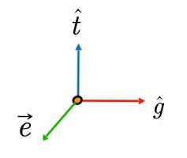
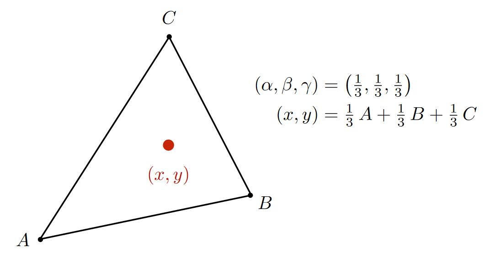
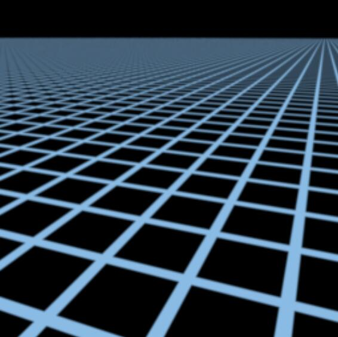
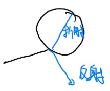
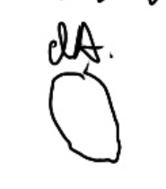

GAMES 101 现代计算机图形学入门
如有侵权，请联系删除
课程主要内容
- 数学基础
- MVP
- 光栅化 Rasterization [29:11］
定义：把3D空间中的几何形体显示在屏幕上
特点：速度快，能达到实时，30 fps。但质量一般。 - 曲线和曲面 Curves And Meshes [30:13]
目的：用简单图形表示曲线和曲面 - 阴影
- 光线追踪 Ray Tracing
目的：产生非常真实的画面
特点：慢 - 动画/仿真 Animation/Simulation[31：45]
图形学 Dependencies 依赖项
[04：52]
数学：线代，微积分，概论
物理：光学，力学
其它：信号，数值分析，美学
说明
这个是GAMES-Webinar提供的一个课程系列。
作者闫令琪大佬在内容上非常专业。课程逻辑清晰有条理。尤其是光栅化和光线追踪这两个话题，能够把复杂的内容讲得深入浅出。但对于其他话题，确实只限于入门。
大佬在讲课方面也很专业。每节课都有上集回顾、本集预告，课程以大约半小时为一个段落，按照易-难-答疑编排。
总之，听大佬上课，不仅能学到知识，更是一种享受。
学习方法
- 学习课程提供的主要应用与相关算法，知道算法的主要过程。
- 根据算法要解决的问题对算法进行归纳整理，对于一个算法的不同演进版本，进行纵向比较，思考算法为什么这样发展。对于同一算法的不同变种进行横向比较，思考每个算法的优缺点和应用场景。
- 思考算法背后所蕴含的思想，以及对自己的启发。
本文出自CaterpillarStudyGroup，转载请注明出处。
https://caterpillarstudygroup.github.io/GAMES101_mdbook/
向量
向量性质
[07：54]
-
方向: \( B - A \) 或 \( \vec{a} \)
-
长度：\( ||B-A || \) 或 \( ||\vec{a}|| \) (与起点无关)
-
单位向量：\( \vec{e}=\frac{\vec{a}}{||\vec{a}||} \)，模长为1
📌补充： 向量一般默认为列向量，所以书写公式时，一个向量写为 \(\vec{a}=\left( x_1, y_1 \right) ^T\)
向量加法
代数意义
$$ \vec{a}=\left( x_1, y_1 \right) ^T , \vec{b}=\left( x_2, y_2 \right) ^T $$
$$ \vec{a}+\vec{b}=\left( x_1+x_2, y_1+y_2 \right) ^T $$
几何意义

向量点乘
几何意义

$$ \vec{a}\cdot \vec{b}=||\vec{a}||\cdot ||\vec{b}||\cdot \cos <\vec{a}, \vec{b}> $$
- \( \vec{a}\cdot\vec{b} \) 是标量
📌补充： 由 \( \vec{a} \) 到 \( \vec{b} \) 的夹角 \( <\vec{a},\vec{b}> \) 是 \( \theta \) , 如果是由 \( \vec{b} \) 到 \( \vec{a} \) 的夹角 \( <\vec{b}, \vec{a}> \) , 则为 \( -\theta \) 。
代数意义
$$ \vec{a}=\left( x_1, y_1 \right) ^T , \vec{b}=\left( x_2, y_2 \right) ^T $$
$$ \vec{a}\cdot \vec{b}=x_1y_1+x_2y_2 $$
性质
-
交换律：\( \vec{a}\cdot \vec{b}=\vec{b}\cdot \vec{a} \)
-
分配律： \( \vec{a}\cdot(\vec{b}+\vec{c})=\vec{a}\cdot \vec{b}+\vec{a}\cdot \vec{c} \)
-
结合律： \( (k\cdot \vec{a})\cdot \vec{b}=\vec{a}\cdot (k\cdot \vec{b})=k\cdot(\vec{a}\cdot \vec{b}) \)
作用
-
找到两个向量之间的夹角
\( \cos \theta =\frac{\vec{a}\cdot \vec{b}}{||\vec{a}||\cdot ||\vec{b}||} \)
-
一个向量投影到另一个向量

📌补充： \( length=||\vec{b}||\cos \theta =||\vec{b}||\frac{\vec{a}\cdot \vec{b}}{||\vec{b}||\cdot ||\vec{a}||}=\frac{\vec{a}}{||\vec{a}||}\vec{b}=\hat{a}\cdot \vec{b}\)
-
把向量分解成垂直和平行的两个向量

📌补充： \( \vec{b}_{\bot}=\frac{\vec{a}}{||\vec{a}||}\cdot length=\frac{\vec{a}\cdot ||\vec{b}||\cdot \cos \theta}{||\vec{a}||}=\hat{a}\cdot \vec{b}\cdot \hat{a} \)
-
计算两个向量有多接近
两个向量做点乘，可以反映二者的“接近”程度

💡思考： 我们假设 \( \vec{a} \) 已给定，如果一个向量的终点落在虚线上半部分，例如 \( \vec{b} \) ，则可以认为该向量在方向上与 \( \vec{a} \) 是相同的或是说都是向前的；如果一个向量，例如 \( \vec{c}\)，终点落在虚线下半部分，则可以认为 \( \vec{a} \) 和 \( \vec{c}\) 两个向量的方向基本是相反的。且点乘结果落在 \([-1, 1]\) 上，可以表示接近程度。
📌补充：（点乘： \( \vec{a}\cdot \vec{b} > 0 \) ，方向相同； \( \vec{a}\cdot \vec{c} < 0 \) ，方向相反）
向量叉乘
几何意义
\( \vec{c}=\vec{a}\times \vec{b} \)
\(\vec{c}\) 是一个向量，方向同时与 \(\vec{a}\) 和 \(\vec{b}\) 垂直（右手法则），大小为 \(||\vec{a}||\cdot ||\vec{b}||\cdot \sin \theta \) (\(\theta\) 是a到b的夹角)
✅右手螺旋法则：
\(\vec{c}=\vec{a}\times \vec{b}\)
右手手指指向 \(\vec{a}\) 方向，然后沿着去往 \(\vec{b}\) 的方向握紧四指，此时大拇指指向的方向，就是 \(\vec{c}\) 的方向。
性质
[34：15]
- \( \vec{x}\times \vec{y}=+\vec{z} \)
- \( \vec{y}\times \vec{x}=-\vec{z} \)
- \( \vec{y}\times \vec{z}=+\vec{x} \)
- \( \vec{z}\times \vec{y}=-\vec{x} \)
- \( \vec{z}\times \vec{x}=+\vec{y} \)
- \( \vec{x}\times \vec{z}=-\vec{y} \)
- \( \vec{a}\times \vec{b}=-\vec{b}\times \vec{a} \) (不满足交换律)
- \( \vec{a}\times \vec{a}=\vec{0} \)
- \( \vec{a}\times \left( \vec{b}+\vec{c} \right) =\vec{a}\times \vec{b}+\vec{a}\times \vec{c} \) （分配律）
- \( \vec{a}\times \left( k\vec{b} \right) =k\left( \vec{a}\times \vec{b} \right) \) （结合律）
左手则符号相反
📌 在一个三维坐标系中，如果\( \vec{x}\times \vec{y}=\vec{z}\)，那么这个坐标系称为右手坐标系。
代数意义
[36:11]
\[ \vec{a}\times \vec{b}=\left( \begin{array}{c} y_az_b-y_bz_a\\ z_ax_b-x_az_b\\ x_ay_b-y_ax_b \end{array} \right) \]
💡思考： 这个式子中，\( x_a,y_a,z_a \) 是\( \vec{a}\) 在三维坐标系中的三个坐标分量的代数表示。 叉乘只用于3D中，在2D中没有定义。
在图形学中的作用
-
判定左和右

如果\( \vec{a}\times \vec{b} \) 的结果是正值，即与 \(Z\) 轴方向相同，就表示 \(\vec{b}\) 在 \(\vec{a}\) 的左侧。
📌左右： 目标向量逆时针旋转指向的区域，是目标向量的左侧，反之是右侧。
-
判断内和外

✅如何判断P点在A、B、C的内部？
\( AB\times AP \)，可以得到 \(AP\) 在 \(AB\) 的左侧。\( BC\times BP \)，可以得到 \(BP\) 在 \(BC\) 的左侧。\( CA\times CP \)，可以得到 \(CP\) 在 \(CA\) 的左侧。这样，就可以判断出P点在A、B、C的内部（P点在这三条边的同一侧）。
-
构建右手坐标系
有三个单位向量，两两垂直：
\(||\vec{u}||=||\vec{v}||=||\vec{w}||=1\)
\(\vec{u}\cdot \vec{v}=\vec{v}\cdot \vec{w}=\vec{u}\cdot \vec{w}=0\)
且 \(\vec{w}=\vec{u}\times \vec{v}\)
则这三个向量构成一个右手坐标系。
可以把任意一个向量分解到轴上去：
\(\vec{p}=\left( \vec{p}\cdot \vec{u} \right) \vec{u}+\left( \vec{p}\cdot \vec{v} \right) \vec{v}+\left( \vec{p}\cdot \vec{w} \right) \vec{w}\)
- \(\left( \vec{p}\cdot \vec{u} \right)\) 是投影长度
- \(\vec{u}\) 是方向
本文出自CaterpillarStudyGroup，转载请注明出处。
https://caterpillarstudygroup.github.io/GAMES101_mdbook/
矩阵
矩阵运算性质
[45：00]
- \(AB\ne BA\)
- \(\left( AB \right) C=A\left( BC \right) \)
- \(\left( A+B \right) C=AC+BC\)
- \(\left( AB \right) ^T=B^TA^T\)
- \(AA^{-1}=A^{-1}A=I\)
- \(\left( AB \right) ^{-1}=B^{-1}A^{-1}\)
2D变换(2D Transformation)
[06：52]
缩放变换(Scale)

图中，横轴和纵轴都缩小了\(\frac{1}{2}\)，用数学形式表达：
\[ x'=sx \\ y'=sy \] 其中，\((x',y')\) 是缩放后的坐标，\(s\) 是缩放尺度，\((x,y)\) 是原坐标。
将该式子写成矩阵的形式为：
\[ \left[ \begin{array}{c} x'\\ y'\\ \end{array} \right] =\left[ \begin{matrix} s& 0\\ 0& s\\ \end{matrix} \right] \left[ \begin{array}{c} x\\ y\\ \end{array} \right] \]
即，得到缩放矩阵为：
\[ S_{0.5}=\left[ \begin{matrix} s& 0\\ 0& s\\ \end{matrix} \right] =\left[ \begin{matrix} 0.5& 0\\ 0& 0.5\\ \end{matrix} \right] \]
如果缩放不是均匀的，例如 \(x\) 轴缩小0.5，\(y\) 不变，则用矩阵表示为：

\[ \left[ \begin{array}{c} x'\\ y'\\ \end{array} \right] =\left[ \begin{matrix} s_x& 0\\ 0& s_y\\ \end{matrix} \right] \left[ \begin{array}{c} x\\ y\\ \end{array} \right] \]
即，得到缩放矩阵为：
\[ S_{0.5,1.0}=\left[ \begin{matrix} s_x& 0\\ 0& s_y\\ \end{matrix} \right] =\left[ \begin{matrix} 0.5& 0\\ 0& 1.0\\ \end{matrix} \right] \]
反射(Reflection)
反射也称对称。

上图中，原图相对于 \(y\) 轴做了反转，用等式表示为：
\[ x'=-x\\ y'=y \]
该等式可以用矩阵表示为：
\[ \left[ \begin{array}{c} x'\\ y'\\ \end{array} \right] =\left[ \begin{matrix} -1& 0\\ 0& 1\\ \end{matrix} \right] \left[ \begin{array}{c} x\\ y\\ \end{array} \right] \]
切变(Shear)

上图是切变的例子。可以看到，图像上任意一点的 \(y\) 轴坐标值并未改变，仅 \(x\) 轴坐标改变了。则可以确定的是 \(y'=y\)，继续观察，当 \(y\) 为0时， \(x\) 没有变化，当 \(y\) 为1时， \(x\) 都水平右移了 \(a\) 长度，当 \(y\) 为1/2时， \(x\) 移动了 \(\frac{a}{2}\)，所以，找到了规律， \(x\) 移动距离为 \(ay\)。用矩阵表示为：
\[ \left[ \begin{array}{c} x'\\ y'\\ \end{array} \right] =\left[ \begin{matrix} 1& a\\ 0& 1\\ \end{matrix} \right] \left[ \begin{array}{c} x\\ y\\ \end{array} \right] \]
📌补充： 找到变化规律，就能写出变换的表达式
旋转(Rotate)

✅旋转默认是绕原点(0,0)旋转；默认旋转方向是逆时针旋转。

旋转的矩阵表达式推导：
💡思路： 旋转的图像每一点都需要符合表达式，那么，特殊的点也必须符合，所以从特殊点入手，找出旋转的规律，从而推导出旋转的矩阵形式表达。
假设有一个正方形，如图所示。

将其旋转 \(\theta\) 角度。

我们的目的是得到 \(\left( x,y \right) ->\left( x',y' \right) \)
矩阵的形式为： \(\left[ \begin{array}{c} x'\\ y'\\ \end{array} \right] =\left( \begin{matrix} A& B\\ C& D\\ \end{matrix} \right) \left( \begin{array}{c} x\\ y\\ \end{array} \right) \)
只要找出规律，求出ABCD即可。
我们将目光先聚集在下图中的红点。

最基本的，我们可以知道一些信息，例如，原本的(1,0)点被旋转成为(\(cos\theta，sin\theta\))，

于是，我们就可以初步得到：
\( \left( \begin{array}{c} \cos \theta\\ \sin \theta\\ \end{array} \right) =\left( \begin{matrix} A& B\\ C& D\\ \end{matrix} \right) \left( \begin{array}{c} 1\\ 0\\ \end{array} \right) \)
也就是：
\(\cos \theta =A\cdot 1+B\cdot 0 = A\)
\(\sin \theta =C\cdot 1+D\cdot 0 =C\)
现在，已经得到了A和C。接着，我们选择另一个点。

不难得到，\( B=-sin\theta, D=cos\theta \)
所以有
\( \left( \begin{array}{c} \cos \theta\\ \sin \theta\\ \end{array} \right) =\left( \begin{matrix} cos\theta& -sin\theta\\ sin\theta& cos\theta\\ \end{matrix} \right) \left( \begin{array}{c} 1\\ 0\\ \end{array} \right) \)
上述缩放、反射、切变和旋转，都称为线性变换，可以统一由下面的表达式来表达：
\[ x'=ax+by\\ y'=cx+dy \]
\[ \left[ \begin{array}{c} x'\\ y'\\ \end{array} \right] =\left[ \begin{matrix} a& b\\ c& d\\ \end{matrix} \right] \left[ \begin{array}{c} x\\ y\\ \end{array} \right] \]
\[ X'=MX \]
❗注意： 要用相同维度的向量，去和X相乘。旋转矩阵必须满足\(R^{-1}=R^T\)
齐次坐标
我们先看平移变换：

平移变换非常简单，可以由下面的式子表示：
\[ x'=x+t_x\\ y'=y+t_y \]
但是有一个问题，我们不能把上述式子直接用矩阵的形式表达，需要在矩阵运算后再加一个偏移量：
\[ \left[ \begin{array}{c} x'\\ y'\\ \end{array} \right] =\left[ \begin{matrix} a& b\\ c& d\\ \end{matrix} \right] \left[ \begin{array}{c} x\\ y\\ \end{array} \right] +\left[ \begin{array}{c} t_x\\ t_y\\ \end{array} \right] \]
📌如果只有平移，则 \(a,b,c,d\) 是一个单位矩阵
💡思考： 平移不是线性变换，不满足\(X'=MX\)
为了解决平移变换能够线性表示的问题，将坐标或向量添加一项(以2D为例)：
- 2D point = \((x, y, 1)^T\)
- 2D vector = \((x, y, 0)^T\)
于是，就有了矩阵表达式：
\[ \left( \begin{array}{c} x'\\ y'\\ w'\\ \end{array} \right) =\left( \begin{matrix} 1& 0& t_x\\ 0& 1& t_y\\ 0& 0& 1\\ \end{matrix} \right) \cdot \left( \begin{array}{c} x\\ y\\ 1\\ \end{array} \right) =\left( \begin{array}{c} x+t_x\\ y+t_y\\ 1\\ \end{array} \right) \]
💡 为point增加一项1，因为point移动后不再是原来的point。为vector添加一项0，是因为向量具有平移不变性，向量平移后仍然是原向量。
📌 \((x, y, w)^T\) 如果用于表达2D点，等同于\((\frac{x}{w}, \frac{y}{w}, 1)\)
添加项是否存在，不影响point与vector之间运算的意义：
\[ vector + vector = vector\\ point + vector = point\\ point - point = vector\\ point + point = 两点的中点（齐次坐标下） \]
齐次坐标的性质：
- 有 \((x, y, z, 1)\) 这样一个坐标，那么为该坐标乘以一个不为0的数 \(k\)，即 \((kx, ky, kz, k)\)，结果不变。 同理，给该坐标乘以坐标本身的 \(z\) 值，它仍然表示着3D中的相同点。 例如： \((1, 0, 0, 1)\) 和 \((2, 0, 0, 2)\) 都表示 \((1, 0, 0)\)
仿射变换(Affine transformation)
线性变换 + 平移 = 仿射变换
\[ \left[ \begin{array}{c} X'\\ 1\\ \end{array} \right] =\left[ \begin{matrix} SR& T\\ 0& 1\\ \end{matrix} \right] \left[ \begin{array}{c} X\\ 1\\ \end{array} \right] \]
所有的仿射变换，可以以齐次坐标的形式表达：
仿射变换：
\[ \left[ \begin{array}{c} x'\\ y'\\ \end{array} \right] =\left[ \begin{matrix} a& b\\ c& d\\ \end{matrix} \right] \left[ \begin{array}{c} x\\ y\\ \end{array} \right] +\left[ \begin{array}{c} t_x\\ t_y\\ \end{array} \right] \]
齐次坐标：
\[ \left( \begin{array}{c} x'\\ y'\\ 1\\ \end{array} \right) =\left( \begin{matrix} a& b& t_x\\ c& d& t_y\\ 0& 0& 1\\ \end{matrix} \right) \cdot \left( \begin{array}{c} x\\ y\\ 1\\ \end{array} \right) =\left( \begin{array}{c} x+t_x\\ y+t_y\\ 1\\ \end{array} \right) \]
逆变换(Inverse transform)

💡 当一个变换是通过\(M\)得到的，那么可以通过\(M\)的逆\(M^{-1}\)来恢复变换。
变换合成与分解
- 复杂变换可以通过简单变换一步一步达到
- 变换顺序非常重要，ABC不等于ACB（矩阵乘法性质）
变换合成：

变换分解：

以C点为中心的旋转，可以分解为：
- 从C点平移到原点
- 旋转
- 再从原点平移到C点
即：\(X'=MX=T\left( c \right) \cdot R\left( \alpha \right) \cdot T\left( -c \right) \cdot X\)
再次来看矩阵旋转 \(X'=R_{\theta}X\) :
我们将 \(X\) 旋转 \(\theta\) 度， \(R_{\theta}\) 为：
\[ R_{\theta}=\left( \begin{matrix} \cos \theta& -\sin \theta\\ \sin \theta& \cos \theta\\ \end{matrix} \right) \]
如果要逆转回来，恢复原来的矩阵，需要旋转 \(-\theta\) 度，根据上述旋转的推导，可以得到：
\[ R_{-\theta}=\left( \begin{matrix} \cos \theta& \sin \theta\\ -\sin \theta& \cos \theta\\ \end{matrix} \right) \]
而 \(R_{-\theta}\) 恰好是 \(R_{\theta}\) 的转置矩阵 \(R_{\theta}^{T}\)， 即：
\[ R_{-\theta}=R_{\theta}^{T} \]
由 “当一个变换是通过\(M\)得到的，那么可以通过\(M\)的逆\(M^{-1}\)来恢复变换” 可知，\(R_{\theta}^{-1}\) 与刚刚旋转 \(-\theta\) 推导得到的 \(R_{\theta}\) 相等，即：
\[ R_{\theta}^{-1}=R_{-\theta} \]
于是有：
\[ R_{-\theta}=R_{\theta}^{-1}=R_{\theta}^{T} \]
3D变换(3D Transformation)
如果用齐次坐标来表示三维的点或向量，和二维的情况相似：
- 3D point = \((x, y, z, 1)^{T}\)
- 3D vector = \((x, y, z, 0)^{T}\)
则一个齐次坐标 \((x, y, z, w)^{T}\) \((w\ne 0)\) 表示的点为 \(\left( \frac{x}{w}, \frac{y}{w}, \frac{z}{w} \right)\)
缩放(Scale)
\[ S\left( s_x, s_y, s_z \right) =\left( \begin{matrix} s_x& 0& 0& 0\\ 0& s_y& 0& 0\\ 0& 0& s_z& 0\\ 0& 0& 0& 1\\ \end{matrix} \right) \]
平移(Translation)
\[ T\left( t_x, t_y, t_z \right) =\left( \begin{matrix} 1& 0& 0& t_x\\ 0& 1& 0& t_y\\ 0& 0& 1& t_z\\ 0& 0& 0& 1\\ \end{matrix} \right) \]
旋转(Rotation)
自然旋转
📌自然旋转： 绕着某一个轴旋转。
💡思考： 当绕着x轴旋转时，矩阵在x轴上的坐标值是不变的，因此在变换矩阵中，与X相乘的部分，是 \((1 ,0 , 0)\)，绕y、z轴同理。
绕x轴旋转：
\[ R_x\left( \alpha \right) =\left( \begin{matrix} 1& 0& 0& 0\\ 0& \cos \alpha& -\sin \alpha& 0\\ 0& \sin \alpha& \cos \alpha& 0\\ 0& 0& 0& 1\\ \end{matrix} \right) \]
绕y轴旋转：
\[ R_y\left( \alpha \right) =\left( \begin{matrix} \cos \alpha& 0& \sin \alpha& 0\\ 0& 1& 0& 0\\ -\sin \alpha& 0& \cos \alpha& 0\\ 0& 0& 0& 1\\ \end{matrix} \right) \]
💡思考： 上式的变换矩阵，与x、z不同，是 \(R_{-\theta}\) 而不是 \(R_{\theta}\)，这是为什么呢？
因为绕y旋转，如果使用 \(R_\theta\)，那么可以认为在计算过程中x和z坐标在变化，有 \(\left( \begin{array}{c} X'\\ Z'\\ \end{array} \right) =R_{\theta}\cdot \left( \begin{array}{c} X\\ Z\\ \end{array} \right) =\left( \begin{matrix} \cos \theta& -\sin \theta\\ \sin \theta& \cos \theta\\ \end{matrix} \right) \left( \begin{array}{c} X\\ Z\\ \end{array} \right) \) , 但是， \(\vec{x}\times \vec{z}=-\vec{y}\)，也就是说，使用 \(R_\theta\) 会导致绕y旋转是顺时针旋转，而我们约定了，旋转默认是逆时针旋转，所以需要用 \(R_{-\theta}=\left( \begin{matrix} \cos \theta& \sin \theta\\ -\sin \theta& \cos \theta\\ \end{matrix} \right) \)
绕z轴旋转：
\[ R_z\left( \alpha \right) =\left( \begin{matrix} \cos \alpha& -\sin \alpha& 0& 0\\ \sin \alpha& \cos \alpha& 0& 0\\ 0& 0& 1& 0\\ 0& 0& 0& 1\\ \end{matrix} \right) \]
一般旋转
任意一个3D旋转，可以写成：
\[ R_{xyz}\left( \alpha , \beta , \gamma \right) =R_x\left( \alpha \right) R_y\left( \beta \right) R_z\left( \gamma \right) \]
也就是说，一般旋转可以由绕x、y、z轴的自然旋转组合而成。
在图形学中，任意旋转用矩阵表达为（Rodrigues' Rotation Formula）：
\[ R\left( \mathbf{n},\alpha \right) =\cos \left( \alpha \right) \mathbf{I}+\left( 1-\cos \left( \alpha \right) \right) \mathbf{nn}^{\mathrm{T}}+\sin \left( \mathrm{\alpha} \right) \underset{\mathrm{N}}{\underbrace{\left( \begin{matrix} 0& -n_z& n_y\\ n_z& 0& -n_x\\ -n_y& n_x& 0\\ \end{matrix} \right) }} \]
公式推导：(暂无)
为解决旋转插值问题，参考四元数link。
💡我的思考：
1.复杂问题都可以分解为互相独立的简单问题，但需要保证分解出的子问题是独立的。简单操作也可以组合成复杂操作，但需要保证组合的效果是预期的，而不会引入奇怪的问题。
前面两处使用了这种思路
（1）简单线性变换 复杂仿射变换
（2）基于不同轴的简单旋转 VS 基于特定方向的旋转
但这两个问题的子问题都没有完全独立，因此都存在子问题的顺序要求。
2.当学到一个新的概念/方法时，可以想一想，为什么要引入这个概念/方法？
是为了了解什么问题？
以前是用什么方法来解决的？它有什么问题？
这个方法是否解决了以前方法的问题？这个方法有什么局限性？
两者能否结合？
两者如何取舍？
本文出自CaterpillarStudyGroup，转载请注明出处。
https://caterpillarstudygroup.github.io/GAMES101_mdbook/
Background
MVP：
-
view变换 --> V
确定camera的position和rotation
-
model变换 --> M
确定object的position和rotation
-
projection变换 --> P
建立object到camera的映射，使物体处于坐标中心的\([-1, 1]^3\)这个立方体中。
本节主要描述：对物体的观测，最终会让物体处于坐标中心的\([-1, 1]^3\)这个立方体中。
本文出自CaterpillarStudyGroup，转载请注明出处。
https://caterpillarstudygroup.github.io/GAMES101_mdbook/
View Transformation
定义camera的view
| 说明 | camera当前的view | 期望的view | |
|---|---|---|---|
| position | 摄像机位置 | \(\vec{e}\) | 原点 |
| gaze direction | 摄像机朝向 | \(\hat{g}\) | -Z轴(0,0,-1) |
| up direction | 摄像机向上的方向 | \(\hat{t}\) | Y轴(0,1,0) |

我们期望一个摄像机（view）能够有如上参数，这样方便计算，但是真实的camera view不会和我们期望的相同，所以我们需要对camera的上述三个向量做转换，使得view在原点上。
view的变换
平移
平移 \(\vec{e}\) 到原点：
需要计算：原点 = \(T_{view} \cdot \vec{e}\)
用齐次坐标表达：
\[ \left[ \begin{array}{c} 0\\ 0\\ 0\\ 1\\ \end{array} \right] =\left[ \begin{matrix} 1& 0& 0& ?\\ 0& 1& 0& ?\\ 0& 0& 1& ?\\ 0& 0& 0& 1\\ \end{matrix} \right] \left[ \begin{array}{c} x_e\\ y_e\\ z_e\\ 1\\ \end{array} \right] \]
解得：
\[ T_{view}=\left[ \begin{matrix} 1& 0& 0& -x_e\\ 0& 1& 0& -y_e\\ 0& 0& 1& -z_e\\ 0& 0& 0& 1\\ \end{matrix} \right] \]
旋转
旋转\(\hat{g}\)和\(\hat{t}\)将 \(\hat{g}\) 和 \(\hat{t}\) 旋转到-Z轴和Y轴，求出旋转矩阵 \(R\) 并不容易，但是由-Z轴和Y轴旋转到 \(\hat{g}\) 和 \(\hat{t}\) 就比较简单了，当我们得到 \(R^{-1}\) 后，如何进行逆运算，将 \(R^{-1}\) 转换为 \(R\) 呢？
需要注意，约定的 \(\hat{g}\) 和 \(\hat{t}\) 是垂直的，那么就满足 \(R^{-1}=R^{T}\)，于是有 \(R=(R^{-1})^{T}\)。
\[ R_{view}^{-1}=\left[ \begin{matrix} x_{\hat{g}\times \hat{t}}& x_t& x_{-g}& 0\\ y_{\hat{g}\times \hat{t}}& y_t& y_{-g}& 0\\ z_{\hat{g}\times \hat{t}}& z_t& z_{-g}& 0\\ 0& 0& 0& 1\\ \end{matrix} \right] \]
\[ R_{view}^{}=\left[ \begin{matrix} x_{\hat{g}\times \hat{t}}& y_{\hat{g}\times \hat{t}}& z_{\hat{g}\times \hat{t}}& 0\\ x_t& y_t& y_{-g}& 0\\ x_{-g}& y_{-g}& z_{-g}& 0\\ 0& 0& 0& 1\\ \end{matrix} \right] \]
旋转 + 平移
通过对camera进行旋转和平移，使camera满足指定view旋转与平移结合的方式有两种：
- 先旋转后平移
- 先平移后旋转
根据常识可知，应该先旋转在平移。
因此有变换矩阵：
\[ M_{view}^{}=\left[ \begin{matrix} x_{\hat{g}\times \hat{t}}& y_{\hat{g}\times \hat{t}}& z_{\hat{g}\times \hat{t}}& -x_e\\ x_t& y_t& y_{-g}& -y_e\\ x_{-g}& y_{-g}& z_{-g}& -z_e\\ 0& 0& 0& 1\\ \end{matrix} \right] \]
本文出自CaterpillarStudyGroup，转载请注明出处。
https://caterpillarstudygroup.github.io/GAMES101_mdbook/
如果object与camera做相对运动，那么即便view的坐标变换了，得到的视图也不会改变，也就是说，model也需要和view做相同的平移和旋转。
Projection 投影变换
[39：00]目的：物体处于坐标中心的\([-1, 1]^3\)这个立方体中。
正交投影vs透视投影
-
投影： 3D --> 2D
正交投影:（左），用于工程制图
透视投影：（右），呈现出近大远小的效果，类似于人眼

-
数学上的区别:
正交投影: 认为相机是近处的一个点
透视投影: 认为相机位于无限远处
正交投影
[43：00]

准备工作
把相机 view 变换为期望 view（转换到原点），方法是让相机参数乘以一个矩阵。
为了保持camera和object的相对位置不变，object也要同样乘以这样一个矩阵。
这样调整之后，在Projection阶段，只需要使用object调整之后的坐标，所以实际上只需要让object调整就可以。
正交投影中的平移

| 当前位置 | 期望位置 | |
|---|---|---|
| 左右 | [l,r] | [-(r-l)/2, (r-l)/2] |
| 上下 | [b,t] | [-(t-b)/2, (t-b)/2] |
| 远近 | [f,n] | [-(n-f)/2, (n-f)/2] |
📌补充： 由于投影的设定，l在坐标值上，小于r；b小于t，f小于n（因为朝向-Z轴）
正交投影的平移矩阵为：
\[ M_{trans}=\left[ \begin{matrix} 1& 0& 0& -\frac{r+l}{2}\\ 0& 1& 0& -\frac{t+b}{2}\\ 0& 0& 1& -\frac{n+f}{2}\\ 0& 0& 0& 1\\ \end{matrix} \right] \]
正交投影中的缩放

与平移同理。
正交投影的缩放矩阵为：
\[ M_{scale}=\left[ \begin{matrix} \frac{2}{r-l}& 0& 0& 0\\ 0& \frac{2}{t-b}& 0& 0\\ 0& 0& \frac{2}{n-f}& 0\\ 0& 0& 0& 1\\ \end{matrix} \right] \]
正交投影中的旋转
正交投影过程不涉及object的旋转，因此旋转矩阵\(\M_{rotation})是单位阵。
透视投影
[53:10]

透视投影的过程是先将Frustum（截锥体）转换为Cuboid（长方体），然后再用上面的方法对长方体做正交投影：

要把Frustum转换为Cubuid是仿射变换的过程，主要方法仍是求出仿射变换的矩阵。
在正交投影中，是根据正交变换的过程，将仿射变换矩阵分解为S, R, T三个部分，依次计算出S， R, T再将它们合并。
在透视投影中，仍然不涉及旋转，但是平移和缩放的过程是揉合在一起的，难以拆分，因此采用选取特殊点的方式，直接求出投视投影的变换矩阵。
\(M_{persp\rightarrow ortho}\)
侧面分析
从侧面看，存在相似三角形（图中很容易看出）

推导
通过相似三角形，可以得到：
\[ y'=\frac{n}{z}y\\ x'=\frac{n}{z}x \]
我们的目的是将 \((x, y, z)\) 转换为 \((x', y', z)\)。
现在可以得到：
\[ \left( \begin{array}{c} x\\ y\\ z\\ 1\\ \end{array} \right) \Rightarrow \left( \begin{array}{c} nx/z\\ ny/z\\ unknown\\ 1\\ \end{array} \right) \]
为坐标乘以 \(z\)，得：
\[ \left( \begin{array}{c} x\\ y\\ z\\ 1\\ \end{array} \right) \Rightarrow \left( \begin{array}{c} nx/z\\ ny/z\\ unknown\\ 1\\ \end{array} \right) ==\left( \begin{array}{c} nx\\ ny\\ still,,unknown\\ z\\ \end{array} \right) \]
想要将 \(\left( \begin{array}{c} x\\ y\\ z\\ 1\\ \end{array} \right)\) 投影为 \(\left( \begin{array}{c} nx\\ ny\\ unknown\\ z\\ \end{array} \right) \)，需要求一个投影矩阵：
\[ M_{persp\rightarrow ortho}^{\left( 4\times 4 \right)}\left( \begin{array}{c} x\\ y\\ z\\ 1\\ \end{array} \right) =\left( \begin{array}{c} nx\\ ny\\ unknown\\ z\\ \end{array} \right) \]
我们已经知道一些数据了，所以能求出M的一些值（显然，由上式可得）：
\[ M_{persp\rightarrow ortho}^{\left( 4\times 4 \right)}=\left( \begin{matrix} n& 0& 0& 0\\ 0& n& 0& 0\\ ?& ?& ?& ?\\ 0& 0& 1& 0\\ \end{matrix} \right) \]
n面分析和f面分析
-
Frustum的n（近处）面，所有坐标是不变化的。
-
f面的Z轴坐标值，是不变化的；Z轴穿过的中心点的坐标值，是不变化的。

继续推导
M已经被解决不少了，但还差一些，不过，我们还有一些坐标点不变的性质可以使用：
n面，所有坐标点不变，那么取一个n面上随便一点，该点的Z轴坐标值为n，即：
\[ \left( \begin{array}{c} x\\ y\\ n\\ 1\\ \end{array} \right) \]
为坐标乘以n：
\[ \left( \begin{array}{c} nx\\ ny\\ n^2\\ n\\ \end{array} \right) \]
既然这一点在投影前后不会变化，我们可以列出下面的式子：
\[ \left( \begin{array}{c} nx\\ ny\\ n^2\\ n\\ \end{array} \right) =\left( \begin{matrix} n& 0& 0& 0\\ 0& n& 0& 0\\ ?& ?& ?& ?\\ 0& 0& 1& 0\\ \end{matrix} \right) \left( \begin{array}{c} x\\ y\\ n\\ 1\\ \end{array} \right) \]
上式其实只剩下下面这个式子要求：
\[ n^2=\left( ?, ?, ?, ? \right) \left( \begin{array}{c} x\\ y\\ n\\ 1\\ \end{array} \right) \]
具体来说，是这样的：
\[ n^2=\left( 0, 0, A, B \right) \left( \begin{array}{c} x\\ y\\ n\\ 1\\ \end{array} \right) \]
于是可以得到：
\[ An+B=n^2 \]
同理，在f面上，所有点的Z轴坐标值不变，可以得到：
\[ Af+B=f^2 \]
联立上述AB方程，解得：
\[ A=n+f\\ B=-nf \]
所以我们推导出了透视投影的一个变换矩阵：
\[ M_{persp\rightarrow ortho}^{\left( 4\times 4 \right)}=\left( \begin{matrix} n& 0& 0& 0\\ 0& n& 0& 0\\ 0& 0& n+f& -nf\\ 0& 0& 1& 0\\ \end{matrix} \right) \]
透视投影矩阵
透视投影的最终的变换矩阵是 M = M（正交）M（透视）
为什么透视投影会z会后移
从数学上
定义z'为变换后的z坐标，那么z' = (n+f)-nf/z
\[ f = z' - z = (n+f) - nf/z -z \]
\[ zf = -z^2 + (n+f)z - nf \]
zf是一个开口向下的二次曲线。它与x轴的交点在z=n处和z=f处。当z位于(f, n)区间时，zf>0。
由于f<0且n<0，当z位于(f, n)区间时，z<0，因此f<0，即z'-z<0
z'<z，因此z会变远。
从直觉上
一开始会觉得有点奇怪，违反直觉。细想之后觉得是很合理。
因为透视投影要表现出近大远小的效果。近大不止是x轴和y轴的大，z轴上也会大。即同一个物体，如果放得近，它在z轴上会更大点。
空间上也是如此，透视前的空间，把它以z=0分成前后均匀的两半，近的那一半，在透视后必然要占更大的z轴范围，因此z会往后。
本文出自CaterpillarStudyGroup，转载请注明出处。
https://caterpillarstudygroup.github.io/GAMES101_mdbook/
当观测结束后，所有物体到了[-1, 1]的三次方这个立方体中，那么，下一步是什么？将其放在屏幕上。
什么是光栅化
🔎
pixel：像素，picture element，一个小方块，且方块内颜色不变 Raster:屏幕，由像素组成二维数组
Rasterize: 光栅化
Triangle Mesh: 三角形面片
光栅化，即把对象（object）画在屏幕（raster）上。对象是指cubic中的内容，常用用三角形面片表示对象的表面。屏幕，由像素（pixel）组成的2D数组。数组的大小代码的屏幕的分辨率。
具体过程可以描述为：找到对象表面在cubic中的位置，根据cubic与raster的关系，确定它在raster上应出现的位置。在raster的正确的位置上渲染对象。
将观测的物体在屏幕上显示，就是光栅化。
定义一些符号
- 描述立方体的符号：l，r，u，d，f，n
- l = -r = 1
- b = -t = 1
- f = -n = 1, 物体在z轴负方向，因此n < 0
- 描述屏幕的符号：

- 宽高比（Aspect ratio）
- width/height
- 视角（Field of view）

- 用符号描述屏幕和立方体的关系
把视角和宽高比转换为l、r、b、t

由图可得以下关系：
\[ \tan \frac{fovY}{2}=\frac{t}{|n|} \]
\[ aspect=\frac{r}{t} \]
📌补充： 定义一个视锥，只需要视角和宽高比即可，其他参数可以转换。
光栅化的最基本的流程
Step 1: 选取cubic中物体的表面三角形
3D空间中的物体，通常使用三角形面片来描述物体的表面。所谓把物体画到屏幕上，实际上就是把这些三角形面片画到屏幕上。
为什么用三角形描述物体表面？
-
三角形是最基本的多边形（其他多边形可以由三角形拼成）
-
一个三角形一定在一个平面上
-
三角形关于“内”、“外”的定义是明确的
-
给定三角形三个顶点的属性，其内部任意点的属性可以通过插值得出
Step 2: 根据三角形在cubic内的坐标计算出它在屏幕上的位置（浮点数）
坐标系的变换，只需要计算出正确的变换矩阵就可以实现。

\[ \begin{bmatrix} x' \\ y' \\ 1 \\ 1 \\ \end{bmatrix} = \begin{bmatrix} S & T \\ 0 & 1 \\ \end{bmatrix}\begin{bmatrix} x \\ y \\ z \\ 1 \end{bmatrix} \]
其中S是指缩放，T是指平移，这里面不涉及到旋转。
对变换做以下假设：
- 忽略Z轴
- 将xy平面：[-1,1]^2 转换到 [0, width] X [0, height]
- 不涉及旋转
选取部分特殊点，代入计算，即可得出变换矩阵为：
\[ M_{viewport}=\left( \begin{matrix} \frac{width}{2}& 0& 0& \frac{width}{2}\\ 0& \frac{height}{2}& 0& \frac{height}{2}\\ 0& 0& 1& 0\\ 0& 0& 0& 1\\ \end{matrix} \right) \]
Step 3: 把三角形画在屏幕上
根据上面的转换公式，可以得出三角形上每个点对应在屏幕上的位置（浮点数）。但屏幕上像素的下标是整数。如下图：

怎么确定每个像素格子是否需要被渲染成三角形的颜色？
最简单的方法是：判断屏幕空间中每个像素的中心是否在三角形的内部。

屏幕空间
在屏幕上的坐标系

- 每个像素的坐标是整数，范围为[0, width) [0, height)
- 像素(x， y)的中心位置：(x+0.5, y+0.5)
❗注意区分坐标与位置的不同含义
方法一：采样方法
依次遍历每个像素(x, y)：
取像素中心的位置(x+0.5, y+0.5)
判断像素中心是否在三角形内部（叉乘）
如果在内：
渲染
如果在外：
渲染
如果在三角形边上：
自己决定是否渲染
🔎判断三角形的内和外：
https://caterpillarstudygroup.github.io/GAMES101_mdbook/Dependency/Vector.html#%E5%9C%A8%E5%9B%BE%E5%BD%A2%E5%AD%A6%E4%B8%AD%E7%9A%84%E4%BD%9C%E7%94%
缺点：必须要依次check每个pixel
方法二：Bounding Box [56:00]
对整个屏幕遍历，然后判断每个像素的中心是否在三角形内，这太傻了。
正确的做法是，只遍历包围三角形的最小矩阵，称之为三角形的包围盒。

局限性：
对于这种情况仍有较大的计算量。

方法三：Incremental [56:55]
一种启发式的方法，比较容易想到，也懒得记了。
📌课程中关于显示器的部分被我跳过了，因为我认为与算法相关度不大。
光栅化的结果
[1:02:38], [1:03:01]

本文出自CaterpillarStudyGroup，转载请注明出处。
https://caterpillarstudygroup.github.io/GAMES101_mdbook/
走样
当按照像素中心是否在三角形内的采样方式采样后，得到了不理想的结果。
产生了锯齿！（jaggies）
消除锯齿是图像学致力于解决的重要问题。
抗锯齿，也叫反走样。
反走样（Antialiasing）的定性分析与解决方法
采样理论
Photo是对image的采样
video是在时间维度的采样[07:33]
它们都是将连续的信息离散化。
采样会产生 Artifact，例如：
- 锯齿[09:17]
- 摩尔纹[09:30]
- 车轮效应
Artifact的本质原因：信号变化太快，采样速度跟不上
反走样方法
[14:05]
先对object模糊化，然后再采样
模糊化的过程使用滤波实现。
采样后，中心点红色，边界点粉红色

本文出自CaterpillarStudyGroup，转载请注明出处。
https://caterpillarstudygroup.github.io/GAMES101_mdbook/
上节提到，走样的本质原因是信号的变化速度太快，采样的速度跟不上。
变化速度与采样速度，都是与频率相关的概念，因此本节从频域的角度来分析走样问题。
频域的相关概念
余弦波
\(\cos 2\pi fx\)，其中f代表频率。f越大，则信号变化越快。

傅里叶级数展开：
任何一个周期函数可以写成：不同频率的正/余弦函数的线性组合，以及一个常数。

❓ 非周期函数会怎么样呢？
傅里叶变换（可逆）

傅里叶变换是指把函数转为它在频域上级数展开的形式。
函数与采样的关系
函数的频率
基于傅里叶变换，可以把函数分解为不同的频率的函数[24：51]
频率高，即代表信号变化快。也就是说，一个函数是由各种不同频率的信号混合而成的。
采样的频率
[24:51]
以相同采样频率对以上函数采样
通过采样点能恢复出低频信息，不能恢复出高频信息。
[29:00]
走样的本质原因的数学描述：两个不同频率（蓝黑）的信号，在某采样频率下，得到了完全相同的采样点，因此无法区分。

因此函数中的低频部分的信号就被当成了另一种信号。
图像中的频率成分[29：32]
即：把某些信息（即特定的频率分量）去掉。以图像为例，把图像（时域信息）转成频域信息[31：01]：

图像的频域图具有以下特点：
-
图中点越亮代表此处频率的能量越高
-
图像中的信息大部分为低频信息
-
由于强行把图像周期化，红色框中的亮线是图像跨越边界时产生的高频信息

高通 filter [34：21]
保留频域图中的高频信息，再把频域图恢复成原始图像。发现图像只剩下了原图的轮廓部分。

解释：
保留的高频信息对应于图像边界。因为图像边缘为信号的剧变处。
低通 filter [36：19]
同理，只保留图像的低频信息，图像会变模糊，失去边界

本文出自CaterpillarStudyGroup，转载请注明出处。
https://caterpillarstudygroup.github.io/GAMES101_mdbook/
滤波 VS 卷积 VS 平均
卷积 VS 平均
结论1： 卷积可以看作是个局部区域的加权平均， 卷积kernel即局部加权
卷积 VS 滤波
图像的卷积操作是从信号的卷积运算中借鉴过来的概念。虽然不完全相同，其本质是一样的。
图像的卷积操作可以看作中对图像的时域信息做卷积运算，时域信息的卷积运算又可以转化为频域上的乘积运算。前面所讲的滤波操作实际上就是用频域上的乘积运算来实现的。因此图像的时域卷积操作与频域滤波操作本质上是一致的。
结论2：时域卷积 = 频域滤波， 卷积kernel = 频域filter
结论：
时域卷积 = 频域滤波 = 局部加权平均
卷积kernel = 频域filter = 局部加权
以低通滤波为例：

采样 VS 频域卷积
例子

解释：
a：时域信号
b：a对应的频域信号
c：对a进行采样的周期采样函数
d：采样函数的频域表示
e：对a进行采样的结果，即a与c乘积的结果
f：采样结果的频域表示。由于时域乘积=频域卷积，这也中b与d卷积的结果
分析
采样是通过时域上的乘积操作实现的。
时域乘积 = 频域卷积
\[ f_1\left( x \right) \times f_2\left( x \right) \Longleftrightarrow F_1\left( \omega \right) \otimes F_2\left( \omega \right) \]
💡 \(f_1\left( x \right)\) 是信号（a）， \(f_2\left( x \right)\)是采样信号（c）， \(F_1\left( \omega \right)\) 是a的频谱（b） \(F_2\left( \omega \right)\) 是采样信号的频谱（d）0
结论：采样就是把原信号的频谱以特定周期呈现。
采样周期长 \(\Longrightarrow \)
\(\Longrightarrow \) \(F_2\left( \omega \right)\) 的频谱间隔小
\(\Longrightarrow \) (b)以更密的形式重复
\(\Longrightarrow \) (f)的频谱出现混叠[55:59]
\(\Longrightarrow \) 时域上表现为走样

本文出自CaterpillarStudyGroup，转载请注明出处。
https://caterpillarstudygroup.github.io/GAMES101_mdbook/
提升分辨率
分辨率上升 \(\Longrightarrow \) 像素格子小 \(\Longrightarrow \) 像素采样率上升 \(\Longrightarrow \) （b）间隔大 \(\Longrightarrow \) 混叠少 \(\Longrightarrow \) 减轻走样现象
缺点：受制于物理限制
反走样算法 [59:49]
-
图像转为频域信号
-
对频域信号做低通filter，过滤掉高频信息，使（b）变窄
-
正常采样

MSAA [1：05：17]
Multi Sample Anti-aliasing算法
- Supersampling：一个象素内部划分成多个子（sub）像素 [1:05:17]
- 判断每个子像素是否在三角形内 [1:06:59]
- 对判断结果求平均值 [1:07:22], [1:08:55]

缺点：增加计算量
❗注意: Supersampling 与提升分辨率的区别： 本算法并没有实质性地增加像素点
FXAA
- 用常规方法得到带锯齿图像
- 通过图像匹配的方法找到边界
- 把边界换成没有锯齿的边界
优点：速度快， 与采样无关
TAA [1：15：10]
Temporal Sample Anti-aliasing算法
🔎 Temporal： 时间上的
大概意思是，边界上的点，有时显示在上一帧，有时显示在这一帧
本文出自CaterpillarStudyGroup，转载请注明出处。
https://caterpillarstudygroup.github.io/GAMES101_mdbook/
采样除了会带来走样问题，还有其它问题。
Super Resolution 超分辨率
问题描述： 低分辨率图拉大成高分辨率出现的锯齿问题 解决方法：DLSS，即Deep Learning Super Sampling
Super Sampling 上采样
好像跟上面是同一个问题。
本文出自CaterpillarStudyGroup，转载请注明出处。
https://caterpillarstudygroup.github.io/GAMES101_mdbook/
背景
有多个物体，每个物体都有多个三角形，因此要处理摭挡问题。
画家算法

由远及近的在画布上添加新物体，新添加的物体将已有的物体覆盖
主要步骤：
- 排序 O(nlogn)
- 光栅化
局限性[09:26]：无法决定深度
Z-Buffer 算法
名称：depth buffer， Z buffer，或深度缓存
📌 可以解决画家算法无法决定深度的局限性
预处理
[10:40]由于MVP之后，约定摄像机在坐标原点，物体在视角的z轴负方向，因此物体的z都是负的。为了便于计算，物体上每个点的Z坐标都取其绝对值（深度）。
因此：
- Z(depth) > 0
- Z(depth) 小-->近， Z 大-->远
- 深度是一个物体距离摄像机的Z轴距离的绝对值。
具体步骤
算法过程中维护两个数据:
- frame buffer：存每个像素点当前绘制的像素值。当算法完成时，这里面的数据就是最终输出结果。
- depth buffer：存每个像素点对应的物体上的最小的depth（最近）
两个buffer都是逐像素的，因此将buffer数据可视化[14:38]。

📌
图中，A点是距离视点（摄像机）较近的点，所以颜色比较黑，B点是距离视点较远的点，所以颜色比较白。距离视点近的像素点，颜色就比较黑，反之比较白，这就是depth/Z buffer。

具体步骤：
Initialize depth buffer to ∞
during rasterization：
for triangle in triangles:
for (x, y, z) in triangle:
if z < zbuffer[x, y]:
framebuffer[x,y] = rgb
zbuffer[x,y] = z
else:
pass
- depth buffer 所有像素初始化为无限远
- 对每个三角形做光栅化，每次绘制三角形时，计算当前像素在三角形上的深度Z 如果Z小于depth buffer上对应点的值，就绘制该点，且更新depth buffer。
📌 深度缓存发生在每个像素内。
算法特点
- O(n)
- 与三角形的绘制顺序无关
- 可以与MSAA算法兼容
- 适合GPU优化（因为与绘制顺序无关）
本文出自CaterpillarStudyGroup，转载请注明出处。
https://caterpillarstudygroup.github.io/GAMES101_mdbook/
Shading 着色

（左）不考虑着色的效果；（右）期望达到的效果。
纯色立方体的每个面每个时刻呈现的颜色有变化。使整体效果更真实。
📌 为什么纯色物体的不同时刻和不同位置，其颜色看不去会不同？
答：颜色是差别是物体的材质与光源作用的结果。同一时刻，不同位置上的像素点，与光源的关系不同，呈现的颜色就会不同。不同时刻，光源发生了变化，同一像素点与光源的关系也变了，导致呈现出的颜色的变化。
根据物体的材质，以及物体与光源的关系，对物体的颜色加以调整，这个过程就是着色。
即：The process of applying a material to an object.
本课程中不包含给object添加投影的过程。
本文出自CaterpillarStudyGroup，转载请注明出处。
https://caterpillarstudygroup.github.io/GAMES101_mdbook/
Blinn-Phong 反射模型
这是一个简单基础的模型，它将光分成了三种成分，分别针对这三种成分的光，模拟光源对物体的作用。

- 高光(Specular highlights): 光线反射到镜面反射附近
- 漫反射(Diffuse reflection): 光线被反射到各个方向上
- 环境光(Ambient lighting): 假设任何一个点会接收到来自环境的常量的光
定义

- shading point：当前要计算着色的点，位于物体表面。物体在shading point处的属性包含color, shinness。
- （n）Surface normal：假设点附近极小范围内是一个平面，n为平面指向外的法向量
- （v）Viewer direction：观测方向
- （l）Light direction：光源方向，与光照向point的方向相反
📌 \(\hat{l}\)如何计算？
光源的位置减去shading point的位置，得到向量，然后求出单位长度\(\hat{l}\)
三种成分
漫反射
[47:35]
漫反射具有以下特点：
- 打到 point 上的光线被均匀地反射出去，（与观测点v没有关系）

- l 与 n 的夹角决定了 point 接收到的光线的强度(Lambert's cosine law)

- [54:48] 圆心是点光源，向外辐射能量。根据能量守恒定理（不考虑传播损耗），每个圆上的能量之和不变，因此某点处的能量与它到光源的距离平方是反比。

通过以上分析，定义漫反射的能量公式为：
\[ L_d=k_d\left( I/r^2 \right) \max \left( 0,\boldsymbol{n}\cdot \boldsymbol{l} \right) \]
- \(L_d\)： shading point接收到的漫反射能量
- \(k_d\)： shading point对光的吸收率 (例如，不同的颜色对光的吸收能力不同)
- \(\left( I/r^2 \right)\)： 有多少能量到达了point
- \(\max \left( 0,\boldsymbol{n}\cdot \boldsymbol{l} \right) \)： 从正面照射的光，漫反射才有意义 （非正面射入，\(\boldsymbol{n}\cdot \boldsymbol{l}\)的值小于零）
- \(\boldsymbol{n}\cdot \boldsymbol{l}\)： 表示有多少能量被point接收
效果：

高光项

R 为物体镜面反射的方向，当 v 和 R 接近时，会看到高光。
\(h=\frac{v+l}{||v+l||}\) 代表了 v+l 的方向， h 称为半程向量 half vector。 [08:25] 当v和R接近时，v+l 的方向(h)与n接近:
💡 为什么用\(n\cdot h\)代替\(v\cdot R\)？
因为\(n\cdot h\)更容易计算
通过以上分析，定义高光项的能量公式为：
\[ L_s=k_s\left( I/r^2 \right) \max \left( 0, \cos \alpha \right) =k_s\left( I/r^2 \right) \max \left( 0, n\cdot h \right) ^p \]
- \(k_s\) 吸收率，通常认为高光是白色，也就是全吸收
- \(\left( I/r^2 \right)\) 表示有多少能量到达了point
- \(\max \left( 0, n\cdot l \right) ^p\) 表示n和h的接近程度
- \(L_s\) 同样应该考虑有多少有多少能量被接收，但Blinn Phong模型将这个因素简化了
💡 公式中为什么会有指数p？
在保证函数趋势不变的同时，让高光更集中，通常取[100, 200]

效果：

环境光照项
Blinn Phong模型假设所有 point 接收到来自环境光的强度相同，且为常数:
\[ L_a=k_aI_a \]
与\(l\)和\(v\)无关
模型总述

\[ L=L_a+L_d+L_s=k_aI_a+k_d\left( I/r^2 \right) \max \left( 0,n\cdot l \right) +k_s\left( I/r^2 \right) \max \left( 0,n\cdot h \right) ^p \]
💡 为什么不考虑point到v的距离对能量的影响？？
这部分比较复杂,Blinn-phong模型没有考虑这个问题
本文出自CaterpillarStudyGroup，转载请注明出处。
https://caterpillarstudygroup.github.io/GAMES101_mdbook/
着色频率
[20:50]
-
着色应用于一个平面上,整个平面共用一个L（Flat Shading）

-
着色应用三角形面片的顶点上，每个顶点计算一个L，三角形内通过插值计算出L（Gouraud Shading）

-
着色应用于像素，每个像素计算一个L（Phong Shading）

不同着色频率和着色几何体的效果比较：

本文出自CaterpillarStudyGroup，转载请注明出处。
https://caterpillarstudygroup.github.io/GAMES101_mdbook/
计算一个点的法向量
方法一：利用几何特征
例如，已知object是个球体。可直接球出球表面某点的n（法向量）

方法二：利用三角形面片
[30:08]
\[ N_v=\frac{\sum{N_i}}{||\sum{N_i}||} \]
相邻的三角形的n的平均或加权平均
📌 一个点可做多个三角形的顶点，将这些三角形（面）的法向量求均值，可简单的看做是这个点的法向量

方法三：利用插值
[31:29]
本文出自CaterpillarStudyGroup，转载请注明出处。
https://caterpillarstudygroup.github.io/GAMES101_mdbook/
Real-time Rendering Pipeline
实时渲染管线
📌 一个场景，最后到一张图，中间经历了什么过程，这个过程就是管线（pipeline），即一系列不同的操作。
[35：24]
建模 --> 几何处理 --> 光栅化 --> 着色 --> 帧缓存
基于OpenGL的着色编程是工程问题，跳过
本文出自CaterpillarStudyGroup，转载请注明出处。
https://caterpillarstudygroup.github.io/GAMES101_mdbook/
漫反射公式的拓展
[55：59]
\[ L_d=k_d\left( I/r^2 \right) \left( n\cdot l \right) \]
这是Blinn-Phong模型中计算漫反射项的公式。上述公式的特点是：
- \(k_d\) 不同点的颜色不同
- \(\left( I/r^2 \right) \left( n\cdot l \right) \) 小球上所有点处于相同的一光照环境下
由于这个公式可以描述不同颜色的点在同一光照环境下的不同表现。
这只是将公式应用于漫反射的一个例子，它也可以适用于物体表面的其它属性。例如用它来做纹理贴图，只需要把\(k_d\)换成一种可以表示纹理的属性。
纹理映射 Texture Mapping
3D物体的表面是2D的

纹理：可以看作是一张有弹性、可拉伸的2D图。
纹理映射：是把2D纹理图贴在的物体表面的过程

映射关系：物体表面三角形面片上的顶点，与纹理图上的点的对应关系。
纹理坐标：纹理图上的点的坐标，用符号(u, v)表示，u和v的范围都是[0, 1]
插值：映射关系只包含三角形顶点对应的(u，v)，三角形内部点的(u，v)通过插值得到

应用纹理
目的：为屏幕上的点p=(x,y)设置颜色
- 找出p在投影前的坐标p'=(x,y,z)
- 计算p'的(u,v)
- 从texture中取出(u,v)点的值pv
- 设置p的值为(u,v)点的值为pv
❓ pv值对应漫反射公式中的kd，那么漫反射公式的后面两项跟纹理有什么关系？
本文出自CaterpillarStudyGroup，转载请注明出处。
https://caterpillarstudygroup.github.io/GAMES101_mdbook/
Background
为什么需要计算三角形内插值？
答：很多特殊值的计算都是只计算顶点，而内部点的值通过插值得到平滑的结果。
插值可以用于哪些数据？
答：纹理坐标、颜色、法向量等
重心坐标 Barycentric Coordinates
三角形的 \(\left( \alpha , \beta , \gamma \right) \) 坐标系统

假设三角形的三个顶点分别是 A、B、C，则三角形所在平面上的任意一点可描述为A、B、C的线性组合，即：
\[ \left( x,y \right) =\alpha A+\beta B+\gamma C \]
三角形内部的点需要满足：\(\alpha +\beta +\gamma =1\) \(\alpha \geqslant 0, \beta \geqslant 0,\gamma \geqslant 0\)
\(\left( \alpha , \beta , \gamma \right)\) 称为三角形平面上的任意一点在三角形重心坐标系下的表示，简称为重心坐标。
在此定义下，可得出：
\[ A=\left( 1,0,0 \right) ,, B=\left( 0,1,0 \right) , C=\left( 0,0,1 \right) \]
\[ 重心 = \left( \frac{1}{3},\frac{1}{3},\frac{1}{3} \right) \]

以2D为例，任意点(x,y)的重心坐标公式：

解得：
\[ \alpha =\frac{-\left( x-x_B \right) \left( y_C-y_B \right) +\left( y-y_B \right) \left( x_C-x_B \right)}{-\left( x_A-x_B \right) \left( y_C-y_B \right) +\left( y_A-y_B \right) \left( x_C-x_B \right)} \]
\[ \beta =\frac{-\left( x-x_C \right) \left( y_A-y_C \right) +\left( y-y_C \right) \left( x_A-x_C \right)}{-\left( x_B-x_C \right) \left( y_A-y_C \right) +\left( y_B-y_C \right) \left( x_A-x_C \right)} \]
\[ \gamma =1-\alpha -\beta \]
📌 重心坐标不是指某个点的坐标，而是根据三角形顶点定义的一套坐标系
利用重心坐标做插值

P是三角形内的一个点，根据P的坐标求出其重心坐标为\(\left( \alpha , \beta , \gamma \right) \)
\(V_A, V_B, V_C\)分别是三角形顶点上的属性值，
那么，P点处的属性值为：
\[ V_P=\alpha V_A+\beta V_B+\gamma V_C \]
优点：计算方便
局限性：空间三角形在平面上投影以后，同一个点在投影前后的重心坐标会改变，因此，插值所有的重心坐标必须是投影前的重心坐标
本文出自CaterpillarStudyGroup，转载请注明出处。
https://caterpillarstudygroup.github.io/GAMES101_mdbook/
问题描述
Texture Map 是256X256的，而要投影的屏幕是4K的，会导致多个屏幕像素对应一个纹理像素。
效果：

双线性插值 Bilinear Interpolation
原理

- 取对应格子的值
- 取邻近四个纹理像素(a,b,c,d)再根据(u,v)在a,b,c,d中的位置插值出(u,v)处的值，即分别做一个横向插值和竖向插值
具体步骤
Linear interpolation(1D)：
\[lerp\left( x,v_0,v_1 \right) =v_0+x\left( v_1-v_0 \right) \]
Two helper lerps:
\[u_0=lerp\left( s,u_{00},u_{10} \right) \]
\[u_1=lerp\left( s,u_{01},u_{11} \right) \]
Final vertical lerp, to get result:
\[f\left( x,y \right) =lerp\left( t,u_0,u_1 \right) \]
效果
虽然还有点模糊，但不是颗粒感的

双向三次插值 Bicubic
- 取周围16个点
- 三阶插值
效果：

本文出自CaterpillarStudyGroup，转载请注明出处。
https://caterpillarstudygroup.github.io/GAMES101_mdbook/
问题描述
纹理像素分辨率过大，比被贴图的表面更精细，也会出现问题。例如：

由于透视的原因，不同距离的屏幕像素对应的纹理像素区域不同
在近处，物体表面比纹理图更精细，即Texture Magnification问题，见上一页，表现为锯齿。
在远处，纹理图比物体表面精细，一个屏幕像素对应一片纹理像素，但只取一个纹理像素来代表这一片点，也会出现问题，表现为摩尔纹
📌 有的像素对应一小部分纹理像素，有的像素对应较大区域的纹理像素

解决方法一：超采样 MSAA
🔎MSAA
可解决，但costly。
解决方法二： Mip map[44:20]
原理：点查询（采样）-->范围查询（取一个范围的平均）。
特点：快，不精确（近似），方形区域
具体步骤
-
根据原始纹理，预处理出低分辨率的纹理，仅消耗额外1/3存储。
[47:17]

-
找出屏幕上的一个像素对应的纹理上的近似方形区域。
[52:30]

-
根据mipmap计算边长为L的纹理方形区域的均值。边长为L的方形区域，会在第\(\log _2L\)层变成一个像素。直接查在\(\log _2L\)层纹理上查(u,v)的值即可。
效果
[56：20]

不同颜色代表查询不同的层，但是，存在两层之间的边界，边界处可能存在突变
改进：三线性插值
这是一种基于mip map的改进，把层数变成一个连续的值，能够解决层数边界上的突变
方法：根据层数再做一次插值，例如需要计算第1.8层的值，就把第1层的插值结果与第2层的插值结果再做一次插值 [57:52]
效果
[1：00：20]

MipMap解决“问题描述”中问题的效果：

远处没有摩尔纹，但是变成了一片灰色，这是因为mipmap只能计算方形区域。而根据上图可以看出，屏幕的方形区域不对应纹理图上的方形区域。
改进：各项异性过滤(Anisotropic littering)
对原始纹理做不均匀压缩，这样，方形压缩区域对应原始的矩形区域。[103：35]

屏幕的方形区域实际上是对应纹理空间的不规律形状，如果用正方形来代表这长条，会发生过渡blur。 [1：04：40]
各项异性过滤能解决水平或竖直长方形的问题，不能解决倾斜长方形的问题。
改进：EWA Filtering
[1:06:31]

本文出自CaterpillarStudyGroup，转载请注明出处。
https://caterpillarstudygroup.github.io/GAMES101_mdbook/
纹理，原义为贴图。广义上，纹理=内存 + 范围查询（滤图）。通过这样的技术，可以得到很多实用的功能。
用纹理记录环境光照
以一个点出发，向其四周都能看到光，把这些光记录下来，就是环境光照。用纹理来描述环境光照，并环境光照渲染其他物体。
例如：这是某个点的环境光照

用这个环境光照来渲染茶壶，就得到了这样的效果

用纹理记录环境光照时，对光做了一些假设和简化：
- 假设环境光的光源无限远，只记录某个方向上的光的信息（强度、颜色等），不记录光源的深度。
- 在记录光照信息时，不区分光照的种类。
[12:35] Spherical 环境图：
如果对一个点的周围均匀采样，得到的是一个球。因此，记录环境光照的纹理图是一个球面的图（左）。

但把球面的环境光照纹理图展开，会出现扭曲：

Cube Map
球表面点和立方体表面点可以一一对应。只要计算出这种对应关系，就能球面上的光照信息存储到立方体表面。

Cube Map展开后不会扭曲

凹凸贴图 - 用复杂纹理代替复杂几何
用纹理定义某个点的相对高度，在object triangle mesh不变的条件下，得到视觉上的表面凹凸效果，即：用复杂纹理代替复杂几何
原理：高度-->法线-->着色或法线-->着色
法线贴图 - 用纹理记录顶点的法线
Bump Mapping效果：

以2D为例：
- 在p点定义局部坐标系，令原始方向向上，为(0,1)或(0,0,1)
- 想要让p表现出在p'处的效果，需要计算出在局部坐标系下，p'处的切线方向和法线方向

- 根据dp（通过纹理记录的值），直接使用以下公式就可以计算出p'处的切线方向和法线方向

| 2D | 3D | |
|---|---|---|
| p的法线方向 | (0,1) | (0,0,1) |
| p'的切线方向 | (1,dp) | (1, dp/du, dp/dv) |
| p'的法线方向 | (-dp, 1) | (-dp/du, -dp/dv, 1) |
-
在此局部坐标系中求切线方向和法线方向，求出后再切回实际坐标系。
-
根据新的切线
凹凸贴图的局限性：

- 边缘处会露馅
- 缺少“自己阴影投影到自己身上”
位移贴图 - 用纹理记录顶点的高度偏移
输入：原始mesh，高度贴图
输出：mesh的顶点被改变
代价：要求原始mesh的三角形足够细
改进：动态三角形细分
3D纹理

纹理不只有表面，内部也有值，即空间任意一点都有值。
纹理并非实际定义，而是通过noise生成（[35:01]右）
3D纹理用于体积渲染
用于记录3D空间信息
用纹理记录之前算好的信息
[35:35]
好处：很多计算可以提前算好
本文出自CaterpillarStudyGroup，转载请注明出处。
https://caterpillarstudygroup.github.io/GAMES101_mdbook/
几何的表达方式
几何的表达方式分为隐式表达和显式表达。
隐式表达[46:35]是指，不提供点的具体位置，只提供点应满足的约束f(x,y,z)=0
显式表达是指，直接给出所有点的具体位置，或者给出点的映射关系，例如\(f:R^2 \rightarrow R^3\)
实际场景中，会根据需要使用不同的表达方式
隐式表达举例
| 类型 | 举例 | 表达方式 |
|---|---|---|
| Algebraic Surface | [58：10] | \(x^2 + y^2 + z^2 = 1\) |
| Constructive solid Geometry | [58.23] | bool 运算 |
| Distinct Function | [1:01:23] | 可对距离函数做blending |
| level Set Method | [1:10:22] | |
| Fractals 分形 | [1：12：44] |
优点：
- 容易描述
- compact 表达
- 容易计算离表面的距离
- 容易计算光线与表面的夹角 缺点：
- 难以描述复杂对象
显式几何
点云 point cloud
list of points
可以表示任意的几何形状
常用于扫描输出
常被转换为其它方式的使用
Polygon Mesh
应用最广泛。
以三角形、四边形为主
obj 文件格式：
- v：顶点坐标
- vn:顶点法向量，数量同v
- vt：纹理坐标，最多为（顶点数 * 面片数）个
本文出自CaterpillarStudyGroup，转载请注明出处。
https://caterpillarstudygroup.github.io/GAMES101_mdbook/
Lecture 11 Geometry 2 46
Bezier曲线
[13：24] 用一系列控制点定义曲线
起始点同p0位置，方向同\(\vec{p_0p_1}\)
终点同为p3位置，方向同\(\vec{p_2p_3}\)
de Casteliau算法
榭根据给定点序列画Bezier曲线
给定3个点，画Bezier曲线
把起点看作是t=0时刻，终点看作是t=1时刻，画Bezier曲线，相当于求t=[0,1]区间时pt所在的位置。把范围所有时刻的pt连起来就是Bezier曲线。

- 算出b0b1中的t位置的点为a
- 算出b1b2中的t位置的点为b
- ab连成一条线，算是ab中的t位置的点为c
- c是 Pt 的位置，
给定4个点，画Bezier曲线

[23:24]
以上算法的代数表示
推导过程省略，最后的结论是：
\[ b^n(t) = b_0^n(t) = \sum^n_{j=0} b_j B^n_j(t) \]
- \(b_j\) 为定义的控制点。
- \(b^n(t)\) 为一组控制点的线性组合，组合的系数是B，即与t有关的多项式
\[ B^n_j(t) = \sum_{j=0}^n b_j \begin{pmatrix}n \ j \end{pmatrix} t^j(1-t)^{n-j} \]
Berstein多项
[30:40] ˊ
Piece-wise Bezier曲线
[38:23] 多个点的Bezier曲线通常不利于控制，因此把多个点分段，每4个点画一条曲线，例如photoshop中的钢笔功能。
C0连续：数值上连续
C1连续：切线方向连续，即光滑
C2连续：曲率连续
要使分段的Bezier曲线光滑（C1连续），需要让上一段的终点和下一段的起点切线方向一致。这可能通过控制点的位置来实现。
Splint 样条
定义： 一条曲线，由一系列控制点来控制，且满足一定的连续性
B-spines
B: basis，基函数，即与以一定方式将基函数组合，得到一个复杂函数
局部性：移到一个控制点，只在一定范围内影响这个曲线
（这个内容比较复杂，本课不展开了
本文出自CaterpillarStudyGroup，转载请注明出处。
https://caterpillarstudygroup.github.io/GAMES101_mdbook/
Bezier 曲面[54：40]
在两个方向上分别应用插值
本文出自CaterpillarStudyGroup，转载请注明出处。
https://caterpillarstudygroup.github.io/GAMES101_mdbook/
Basic
通过定义点的位置和点之间的连续关系，来描述一个曲面。
在mesh上的操作有：
- 网速细分：引入更多三角形，并调整顶点坐标。使表面更光滑
- 网格简化
- 网格 Regularization：使网格更接近正三角形
网格细分 [09：26]
目的：引入更多三角形，并调整顶点坐标。使表面更光滑
Loop 细分算法
[11:30] (loop 是人名，不代表循环）
- 第一步： 划分三角形
![../assets/9.PNG]
- 第二步：更新new顶点的位置

new顶点被两个old三角形共享，更新公式为：
\[ p = frac{3}{8}(A+B) + frac{1}{8}(C+D) \]
- 更新old顶点的位置

old 顶贞被多个 old 三角形共享
更新公式为：
\[ p = (1 - n * u) * v + n * v' \]
n:与old顶点连接的边数
u:一个经验值
v:old顶点更新前的位置
v': old顶点的邻居的位置 # [?]邻居的平均值？
Catmull-Clark 细分
loop 细分只能用于三角形面片，而此算法则更通用
定义
Quad face：四边形面片
Non-quad face：非四边形面片
奇异点： degree不为4的点，degree 表示与点相邻的边数
具体步骤
- 第一步：取所有边上的中点与面上的中点
把边中点与面中总用一条线连起来 操作后，增加的奇异点个数与 操作前的non-quad face 数相同，且所有的面都变为 quad face
- 第二步： 更新面中心的新增点，

更新公式为：
\[ f = \frac{v_1 + v_2 + v_3 + v_4}{4} \]
- 第三步： 更新边中心的新增点

更新公式为：
\[ e = \frac{v_1 + v_2 + f_1 + f_2}{4} \]
- 更新 old 顶点

更新公式为：
\[ p' = \frac{f_1 + f_2 + f_3 + f_4 + 2(e_1 + e_2 + e_3 + e_4)}{16} \]
Mesh 简化
边坍缩 Edge Collapse
Quadris Error Matrics 二次误差度量
二次误差度量用于选择被坍缩的边
如果用一个点来代替原始的多个点，怎么放这个点得到的形状与原始形状最接近？
答：使用二次说美来度量。[41：17]。即 new point 到 old edge 的距离平方和最小
对任意一条边，坍缩并把 new point 放在与原始 mesh 的误差最小的地方。
把所有边都尝试坍缩，并计算坍缩误差，看哪条边坍缩产生的误差最小，就实际地坍缩这条边。
存在的问题：
坍缩一条边会对它周围的边造成影响。因此不能提前离线算好所有过的误差大小和排序
解触方法：
优先队列。动态更新受影响的边
本文出自CaterpillarStudyGroup，转载请注明出处。
https://caterpillarstudygroup.github.io/GAMES101_mdbook/
阴影
Shadow Mapping 算法
在生成阴影的这一步，不需要知道场景的几何信息
缺点：1.走样 2.该算法只能处理点光源
原理： 如果一个点不在阴影里，那么（camera）人可以看见点&&光源可以看见点
具体步骤：
- 从光源看向场景[55：13]，记录能看到的点的深度(shadow map)。
- 从眼睛看向场景[56：41]，记录眼睛能看到的点。
- 把眼睛能看到的点投影回相机的呈像平面，即推出它会出现在图像的哪个像素上
- 如果点到光源的深度与叫step1记录的这个方向的深度一致， 则：这个点可被光源和 camera 同时看到，不在阴影中。否则：在阴影中
存在点的问题：
- step 4判断距离是否相等，但距离是浮点数
- shadow map 的分辨率
- 只能做硬阴影。
硬阴影 Us 软阴影
硬阴影[1：11：40]边缘锐利 软阴影[1：12：09]，形成原因：半影[1：13：31】，因为光源有大小
光线追踪与光栅化是两种不同的呈像方式，但光栅化具有“can't handle global effect well”的局限性，不能呈现出以下的效果：
- 轮阴影
- glossy反射，即有点粗糙的镜子，或打模非常光滑的金属
- 间接光照，即光线弹射不止一次 因此有了光线追踪技术。
光栅化速度快，质量差， 能达到real-time，光线追踪速度慢，质量好，通常用于offline。
定义
- 光线沿直线传播
- 光线可以交叉但不发生碰撞
- 光线从光源出发，经过不断弹射，打入眼中。即光路可逆
本文出自CaterpillarStudyGroup，转载请注明出处。
https://caterpillarstudygroup.github.io/GAMES101_mdbook/
Baseline 算法[20：40]
假设
- 光源是点光源。
- camera 是一个点
- 完美折射
具体步骤
- 从眼睛向每个像素投出一根光线
- 光线和场景相交，求最近的交点
- 交点与光源连线，判断定是否在阴影中
- 算着色
- 写回像素值
本文出自CaterpillarStudyGroup，转载请注明出处。
https://caterpillarstudygroup.github.io/GAMES101_mdbook/
Whitted-风格算法(递归)
[23：20]
- 经过反射和折射会经过多个弹射点[25:25]
- 对每个弹射点都计算着色的值[25：42]
- 如果某个弹射点能被光源照时，其着色值都会被加到所看的像素上去[26：23]

反射能量 + 折射能量 = 1
一些名词： primary ray, secondary ray, shadow ray
本文出自CaterpillarStudyGroup，转载请注明出处。
https://caterpillarstudygroup.github.io/GAMES101_mdbook/
Ray-Surface 交点
定义
光线：(o, t)，即（起点，方向）
光线上的某一点： o+td, t>=0
光线与球的交点
ray: \(R(t) = o + td\)
圆: \((p - c) ^ 2 - R^2 = 0\)
⇒ \((o + td - c) ^ 2 - R^2 = 0\)
解出t，取大于0且较小的t
光线与隐式曲面的交点
ray: \(R(t) = o + td\)
曲面： f(p) = 0
⇒ f(o + td)=0 解出t
光线与三角形面片的交点
任意一个点与封闭 mesh 求交， 交点个数为奇数则点在内 交点个数为偶数则点在外
光线与三角形的交点
- 光线与三角形面片所在的平面求交点
ray: \(R(t) = o + td\)
平面：\((p-p') \dot N = 0\)
平面公式解释：点乘为0代表垂直，N是平面的法向量，p'为平面上任意一点
⇒ \((o + td - p') \dot N = 0\)
解得：\(t = \frac{(p'- o) \dot N}{d \dot N}\)
- 判断交点是否在三角形内
或 MT 算法。 (P 37）
点在三角形内 \(\Leftrightarrow\) 点用三角形的重心坐标表示且满是 constrain
0 + t D =（1-b1 - b2)P0 + b1P1 + b2p2
其中大写为3D已知向量，小写为未知标量
解得：

判定结果AC的条件：r>0, b1>0, b2>0, 1-b1-b2>0
算法加速
Bounding Volumes 包围盒[56：40]
1.长方体，即3个不同的对面（slab）形成的交集[58:36]
AABB = Axis Aligned Bounding Box

求光线与每个轴上的对面相交的时间，tmin和tmax
光线进入 AABB 的时间为所有[tmin, tmax] 的交集
tenter = max{tmin}, texit = min{tmax}
tenter < texit ⇒ 光线与AABB 相交
texit < 0 ⇒ 不相交
tenter < 0 < texit ⇒ 光源在 AABB 内
Q:为什么要用 AABB A:光线与朋平面求交的计算简单[1:15:49]
普通平面：\(t = \frac{(p'- o) \dot N}{d \dot N}\)
AABB平面：\(t = \frac{(p'_x- o_x) }{d_x}\)
怎样利用 AABB 加速 ray tracing
均匀的格子 Uniform Grids [8：13]
假设：光线与 Grid 求交很快，与 object 求交很慢
- 找到场景的 Bounding Volumn
- BV划分成格子
- 判断每个 Grid 是否有物体
- 判断光线与 Grid 是否相交，
- 如果Grid内有 object且光线与Grid相交，再计算光线与 grid 内的 object 是否相交
算法特点：
- grid 不能太疏或密
- 适用于 object 的大小接近且位置均匀
- 不适用于 object 分布不均匀的场景
空间划分 Spatial Partition
[18：59] Octree, KD tree, BSP tree 视频以KD Tree 为例子。
KD Tree 的数据结构
- 中间结点
划分轴：x,y,z轴流
划分点：根据特定的策略选择
child: 2个
object: 不存 object 数据
- 叶子结色 存 list of objects.
Traverse.
递归
局限性
- 如何判断BV与三角形相交。
- object 存在于多个叶子结点中
物体划分 Object Partition
BVH [40：00]
优点：解决以上2个问题
局限性： BV 有重叠，好的划分使重叠尽量少
Create
- 计算 B V
- 对BV内的obj划分 以上两步交替进行，通常选择对最长的轴进行划分，取中间位置作为划分点。当BV中的三角形个数少于门限时停止
Traverse
同上
KD Tree VS. BVH [54:25]
本文出自CaterpillarStudyGroup，转载请注明出处。
https://caterpillarstudygroup.github.io/GAMES101_mdbook/
Basic radio meting 辐射度量学
定义
这是一种基于物理的方法。首先对光的单位和属性做一些定义
| 定义 | 说明 | 符号 | 单位 | 关系 |
|---|---|---|---|---|
| Radiant Energy | 能量 | Q | J | |
| Radiant Flux | power，即单位时间的能量[1：09：56] | \(\phi\) | W | \(\phi = \frac{dQ}{dt}\) |
| Radiant Intensity | power per unit solid angle，即单位时间单位面积上的能量 | I | \([\frac{W}{Sr}]\) | \(I(w) = \frac{d(\phi)}{dw}\)，其中分子代码power，分母代表per unit solid angle |
| Irradiance | power per unit area | E | \([\frac{W}{m^2}]\) | \(E(x) = \frac{d(\phi(x))}{dA}\)，其中A代表光线垂直接触的面积 |
| Radiance [19:30] | power per unit solid angle per unit area | L | \([\frac{W}{Srm^2}]\) | \(L(p, w) = \frac{d^2(\phi(p, w))}{dwdA\cos\theta}\) |
- 补充1：立体角
立体角：[1：13：19下]
2D：\(\theta = \frac{l}{r}, \in [0, 2\pi]\) 3D：\(\omega = \frac{A}{r^2}, \in [0, 4\pi]\)
单位立体角：[1:17:43]，表示空间中一个方向，符号为：\(\theta\)或\(\phi\)
unit solid angle = \(\sin \theta d \theta d \phi\)
- 补充2：单位面积上的Irradiance

单位面积上的Irradiance为：\(E = \frac{\phi}{4\pi r^2}\) 当 r 变大.不是 Intensity 在衰减，而是 Irradiant 在衰减
- 理解1： Irradiance per 立体角

这是一个unit Area. 它辐射的总能量为 Irradiance 它向方向 W 辐射的能量强度为 Radiance
- 理解2：
沿着 w 方向到达dA的能量为 Radiance 所有方向到达dA的能量的总和为 Irradiance
本文出自CaterpillarStudyGroup，转载请注明出处。
https://caterpillarstudygroup.github.io/GAMES101_mdbook/
BRDF, 双向反射分布函数
输入：一个入射光线的角度和能量
输出：各个反射光线的能量分布，包含镜面反射和漫反射
[36:16]
\[ f_r(w_i->w_r) = \frac{dL_r(w_r)}{dE_i(w_i)} = \frac{dL_r(w_r)}{L_i(w_r)\cos\theta_idw_i} \]
其中分子表示unit area向wr辐射的能量，分母表示unit area从wi接收到的能量
\[ L_r(p,w_r) = \int_{H_2}f_r(p, w_1->w_2)Li(p, w_i)\cos\theta_idw_i \]
其中：
fr：把radiance分给某个出射角
Li：radiance
dwi：每个入射角wi对同一出射方向wr的贡献的累积
任何的出射的 radiance 都会变成其它的入射的 radiance，即公式中的 Li(p, wi)不一定来自光源
渲染方程
Lo(p, wo) = 自己发光 + 来自其它的反射或直射光。
定义的积分域为上半球，即不考虑折射。
- 理解1：1个入射光线。[47:44]
- 理解2：多个八入射光线 [47：57]
- 理解3：1个面光源 [48：30]
- 理解4：考虑其它物体的反射光作为入射光线[49:31] 这里涉及到递归，简化公式得：
\[ I(u) = e(u) + \intI(v)k(u,v)dw \]
其中：
I(u)：未知量
e(u)：自己发的光
I(v)：未知量
k(u,v)dw：材料属性
进一步简化得:
L = E + K L
解得:
\[ L = E + KE + K^2E + k^3E + \dots \]
其中：
前2项为光栅化信息
除第一项以外都是全局光照
1次项KE为直接光照
后面项为间接光照
本文出自CaterpillarStudyGroup，转载请注明出处。
https://caterpillarstudygroup.github.io/GAMES101_mdbook/
概率论基础
省略，见机器学习数学基础
PDF：概率密度函数
复习渲染方程
复习渲染方程，回顾求积分的业务背景
\[ L_o(p, w_o) = L_e(p, w_o) + \int_{\omega^+}L_i(p, w_i)f_r(p, w_i, w_o)(n\dot w_i)dw_i \]
其中：
第一项：自己发的光
Li：接收到的光
fr：反射参数，与材料有关
n*wi：夹角
dwi：积累所有的方向
蒙特卡罗积分 Monto Carlo Integration
目标：求定积分\(\int_a^bf(x)dx\)
方法：在积分域内不断地采样，并对采样结果平均，则：
\[
\int_a^bf(x)dx \approx E(f(x))(b-a)
\]
另一种理解：
使用\(X_i ~ p(x)\)为[a, b]的随机采样，可以是任意的采样方式。则：
\[ F_N = \frac{1}{N}\sum\frac{f(X_i)}{p(X_i)} \]
好处：只需要能对[a b]以一定方式采样，就可以求出定积分
本文出自CaterpillarStudyGroup，转载请注明出处。
https://caterpillarstudygroup.github.io/GAMES101_mdbook/
Path Tracing 路径追踪
Whited Style ray racing 的假设
光线打到光滑/小物体，会反射。
打到透明物体，会折射
打到普通物体，会漫反射
局限性:
[24：13]， glossy 物体被使用镜面反射处理了。
[26：36] 漫反射也应该有多次弹射
Whited Style 算法有局限性，但 rendering 公式是正确的。正确解出 rendering 公式，会得到正确的算法。
用 Monto Calio 方法解定积分
场景1[32：18]
只考虑直接光照，且被照射点不发光。则入射光线为上半球所有Wi，出射光线为 Wo,求 Wo
\[ L_o(p, w_o) = \int_{\omega^+}L_i(p, w_i)f_r(p, w_i, w_o)(n\dot w_i)dw_i \]
从公式可以看出，无自身发光项，且直接光照只来自光源。
用Monto Carlio解定积分，假设使用均匀采样，将公式代入以上公式，可将连续问题转化为离散问题，得到：
\[ L_o(p, w_o) \approx \frac{1}{N} \sum \frac{L_i(p, w_i)f_r(p, w_i, w_o)(n\dot w_i)dw_i}{1/2\pi} \]
其中wi来自采样
场景2[42:41]
\[ L_o(p, w_o) \approx \frac{1}{N} \sum \frac{func(w_i)}{1/2\pi} \]
当wi来自光源时，
\[ fun = Li * Fr * cos \]
当wi来自其它物体q时，
\[ fun = shade(q - wi) * fr * cos \]
[46：48] 光线路径数rays = \(N^{#bouns}\) 这个量级下计算量会爆炸
因此取 N = l （即 path tracing)
[49：4] path足够多，会缓解N=1带来的噪声
ray generation [51:17]
- 在一个像素内采样N个sample
- sample shoot a rag
- 如果 ray 碰中物体 p，则pixel-radiance += 1/N * shade (p, sample)
- return pixel_radiance
如何解递归问题
人为定义 bounce 的次数，后面的cut掉，这会带来能量损失。 解决方案： Russian Roulette 俄罗斯轮盘赌 即不明确定义次数，而是以一定概率决定是否继续 bounce，最后得到的结果除以p. 其期望结果与无限 bounce 的理论结果相同 E = P * (Lo/ P) + (1-P) * 0 = Lo
Path Tracing 的性能与效率[1:00:32]
分析[1：02：12]
当光源大时，N=1随机采样比较容易遇到光源 当光源小时，大多数次随机采样被“浪费”了。
解决方法：上半球均匀采样->只在光源上采样，
如果我来做会指使高斯分布来采样.可以控制重点
采样区域的位置和大小 在上半球积分->在光源上积分
\[ dw = \frac{dA \cos\theta'}{||x'-x||^2} \]
立体角定义
总结 [1：11：26]
直接光照和间接光照分开处理 在光源上积分需要判断一个 sample 出的光线是否被挡住
其它
- 点光源当成面积很小的光源处理
- 怎样对一个函数均匀采样？
- 均匀采样→重要性采样
- 随机数质量对算法的影响
- 把上半球采样与光源采样结合起来
- pixel reconstruction filter
- radiance → color, gamma 校正
本文出自CaterpillarStudyGroup，转载请注明出处。
https://caterpillarstudygroup.github.io/GAMES101_mdbook/
材质与处观
材质是渲染方程中的 BRDF 项
漫反射材质
场景一
假设：入射光是 Uniform 的，出射光是漫反射，也是 uniform 的，那么BRDF项为fr = c（c 的数值与颜色有关）
\[ L_o(w_o) = \int L_i * f_r * cos dw_i \]
这种情况下，Li*fr这一部分是常数，可以提取到wi外面，得：
\[ L_o(w_o) = L_i * f_r * \int_{H^2}cos\theta_i dw_i = \pi f_r L_i \]
\[ fr = frac{1}{\pi} frac{L_o}{L_i} \]
\(frac{L_o}{L_i}\)是散射率albedo，范围[0，1]，数值与颜色有关
场景二[16:14]
类似镜面反射的材质。例如铜镜
场景三[17:40]
折射 + 反射，例如玻璃和水
反射公式
入射角 = 出射角
\[ w_i + w_o = 2(w_i \ dot n ) n \]
说明：
\(w_i\)：入射光
\(w_o\)：出射光
\(2(w_i \ dot n )\)：大小为wi在n的投影长度的2倍
n：方法向法线方向相同
[?]第2种方法没听懂？
折射
折射定率[28:00]：
\[ \eta_i sin \theta_i = \eta_t \sin \theta_t \]
说明：
\(eta_i\)：不同材质有不同折射率。
\(theta_i\)：入射角
\(theta_t\)：出射角
当入射材质折射率>出射材质折射率，有可能折射变为全反射
BSDF(散射) = BRDF(反射) + TDF(折射)
菲涅耳项 [36：11]
反射和折射同时发生时，分别各多少
答：与入射角有关，计算公式[41：55]
本文出自CaterpillarStudyGroup，转载请注明出处。
https://caterpillarstudygroup.github.io/GAMES101_mdbook/
微表面模型 Micro facet Material [43：28]
[46：13]。当物体很远很小时，从远处看， 是平面且粗糙的。从近处看，是几何且镜面反射。[49：09]
微表面的粗糙成度可以用法线分布来表示：
\[ f(i, o) = \frac{F(i, h)G(i, o, h)D(h)}{4(n, i)(n, 0)} \]
说明：
F：Fresnel项
G：几何项
D：法线方向的分布
i：几何遮挡项，表示微表面的互相遮挡。发生情况：光线几乎平的打到表面上时。
各项同性/各项异性材质[1：00：04]
各项同性，即物体微表面不存在一定的方向性，反之则是各项异性。各项异性材质一般是人为制造的材质。
本文出自CaterpillarStudyGroup，转载请注明出处。
https://caterpillarstudygroup.github.io/GAMES101_mdbook/
BRDF 的性质
非负性：\(fr(wi -> wo) > 0 \) 线性 ： [1：07：12] 可折分再叠加 可逆性: \(fr(wi -> wo) = fr(wo -> wr) \)，即交换入射方向与出射方向，BRDF不变 能量守恒：\(\int_{H^2}fr(wi -> wo)\cos\theta_idw_i \le 1\)，总能量不可能变多，但有可能被吸收 各向同性：[1:09:40] \(fr(\theta_i, \phi_i;\theta_r, \phi_r) = fr(\theta_i, \phi_i, \phi_r - \phi_i)\)，其中\(\theta_r\), \(\phi_r\为方位角) fldi.qiioridrktl.ae、出一出）
测量BRDF
[1：12：53] MERL BRDF database
本文出自CaterpillarStudyGroup，转载请注明出处。
https://caterpillarstudygroup.github.io/GAMES101_mdbook/
高级光线传播
高级 Appreǎue 建模
非表面模型 [38：38]
反射介质
例如：雾、云 特点： 光线打到一个介质颗粒上，会被分散（散射）至到各个方向上（图3），也会接受到来自其它方向散射而来的光（图4） 怎么散射：
- diffuse 表面：均匀散射到各个方向
- 介质颗粒：散射由 phase function 来定义 怎么生成 path? [42：07]
- 根据 phase function 决定 bounce 方向
- 根据介质对光线吸收呈度决定 distance
- 形成 ray path
Hair 表面 [45:45]
无色高光，有色高光
kajiya-Kay 模型
把每一根头发看成是圆柱，会把光线产生圆雉形的反射和各个方向的散射 效果：[47：05]
Marahner 模型
把光线的效果分解。
- 反射，圆锥形方向。 R
- 进入（折射） + 出去（折射），圆雉， T T
- 进入（折射） + 内壁（反射） + 出去（折射）， IRT
[49：24右]
效果：[49：46]
Fur 表面
Hair 模型缺少 Medulla 的模拟，因此用在动物上效果不好。
Double Cylinder 模型 [55：13]
增加 TTs 和 TRTs
Granular 材质
[58：37] 颗粒物质的建模，非常耗时
表面模型
半透明材质
例如：玉
物理特点： [1：01：58]左
次表面反射：入射点 \(\ne\) 出射点 (BSSRDF)
BRDF的入射点=出射点，因此要把BRDF中各个方向积分改为各个方向积分各个入射点积分
Dipole 近似
用两个光源照射表面，能得到类似次表面映射的结果.[1:05:07]
布料 Cloth
布料结构[1：09：24] 纤维(fiber) → 股(ply) → 线(yarn) → 布(cloth)
Rendering as Surface
根据编织的形状请计算
适用场景：[1：11：28左] 布料表面是平面
不适用场景：[1：11：28右] 布料表面不是平面
Render as Participating Media
把 cloth 看作是空间体积，划分为细小的格子.
Render as Fiber
暴力计算
细节模型
程序化生成外观 [1:27:21]
定义函数f(x, y, z)，用于查询空间中某一点的纹理
本文出自CaterpillarStudyGroup，转载请注明出处。
https://caterpillarstudygroup.github.io/GAMES101_mdbook/
光场 Light Field / lumigraph
定义
Plenptic Function（全光函数）： 用于描述 the set of all things that we can ever see.
函数定义：
\[ P(\theta, \phi, \lambda, t, V_x, V_y, V_z) \]
说明：
\(\theta, \phi\)：朝某个方向看
\(\lambda\)：颜色
t：时间
\(V_x, V_y, V_z\)：在某个位置器
光场：在任意一个位置，朝任一个方向，发出的光的强度、
把光场信息提前算好.存储于一个包围盒中。
光场参数化
方式一：

参数为2D position和2D direction
方式二：[25：04]

参数为2D position (u, v)和2D position (s, t)
[27:41]

怎么理解这两个图？
Fly's Eye 光线
[32：49] 左图三个颜色代表来自三个方向的光，不是代表光的三元色成分 通过 f 将像素接收到的 irradiane 分解成 radiance 分别存储，
Physical Basis of Color
白光分解原理：不同颜色的光有不同的波长和折射率
谱功率密度= Spectral Power Distribution = SPD，用于描述混合光中不同波长的光的分布[51：41]
SPD 的特点： 线性，可相加
不关心眼睛的是呈像原理，跳过，结论是：[1：10：43]
\[ y = \int r(\lambda)s(\lambda)d\lambda \]
说明：
y:人看到的某光线的结果
r:从眼对不同波长光线的感受
s:某种光线的SPD
应用：
根据公式可知，不同的\(s(\lambda)\)（可得到相同的 y（同色异谱）
color matching：人为调和出\(s(\lambda)\)，使得到的效果与 real world 相同.
[?] 为什么不直接用 real world 的\(s(\lambda)\)？
Additive Color 加色系统
[1：11：44]
\[ R = \int s(\lambda)r(\lambda)d\lambda \]
说明：
s:SPD
r: 某个频谱的RGB primary
d：某种光线的所有频谱
基于人眼的 color matching 和基于加色系统的 color matching，公式相似，但原理不同
颜色空间
CIE XYZ [1：13：02]
一套人造的 color system，色域为颜色空间中所有可表示的颜色
sRGB
[1：18：28]
这部分内容对我不太重要。有一项内容值得借鉴。 如何在二维空间中可视化三维信息。
- 归一化 任何可视化都是要先归一化的。在一个标准的尺度如分析才有意义
- 固定一个维度。 选择固定哪个维度是有策略的。可以选择影响最小的维度或最便于观察的维度。也可以画多张图，每次分别固定一个维度.
HSV [1：20：46]
CIELAB [1:22:21]
本文出自CaterpillarStudyGroup，转载请注明出处。
https://caterpillarstudygroup.github.io/GAMES101_mdbook/
Film：24fps，video： 30 fps, VR: 90fps，否则会晕
关键帧动画 key frame
key frame定义整个动画的走向，中间帧通过插值得到
本文出自CaterpillarStudyGroup，转载请注明出处。
https://caterpillarstudygroup.github.io/GAMES101_mdbook/
物理仿真：Physical Simulation [21：10] 通过推导或实现物理公式，来计算出物体的形状和位置的变化。
质量弹簧系统 Mass Spring System
Mass：质量， Sping：弹簧
A simple Spring

\[ f_{a->b} = K_s(b - a) \] 相当于rest length = 0
\[ f_{b->a} = - f_{a->b} \]
\(f_{a->b}\)代表a 点受到的往 b 方向去的力
Non-zero Length Spring
\[ f_{b->a} = K_s \frac{b-a}{||b-a||}(||b-a||-l) \]
说明：
分母||b-a||：归一化
l：rest length，弹簧长度为1时不受力，与方向无关
符号：
\(x\)：位置 \(\dot x\)：速度 \(\ddot x\)：加速度
有摩擦力的弹簧
\[ f_b = -K_d \frac{b-a}{||b-a||}(\dot b - ]dot a) \frac{b-a}{||b-a||} \]
说明：
fb：摩擦力
第一项Kd：弹性系数
第二项：在弹簧力的方向上的速度分量
第三项：力的大小与b相对于a的速度有关
第四项：力的方向
第二、三项：在特定方向上的相对速度的大小，向量点乘，得到的是一个标量
摩擦力与弹簧本身长度没有关系。
Sheets 用于布料
增加用于切变的力：

局限性：各项异性，且不能对抗弯折
有限元方法 Finite Element
用于模拟汽车碰撞，考虑碰撞体内力的传导。
粒子系统 particle System [49:38]
分别对每一个粒子建模
动力：重力、吸引力、电磁力、斥力
阻力：摩擦力、粘滞力
碰撞
说明： 模拟和渲染是两个独立的步骤[56：31]
粒子系统的更多应用场景：水、星系、鸟群、分子结构
本文出自CaterpillarStudyGroup，转载请注明出处。
https://caterpillarstudygroup.github.io/GAMES101_mdbook/
要解决的问题
- 场景一：
已知：初始的 position x0，任意时刻的速度 求：某个时间刻的 position
- 场景二：
已知：初始的 position X0，速度场，即在任意 position 上的速度 [06：40]
求：某时刻的 position
欧拉方法
\[
x^{t+\delta t} = x^t + \delta t \dot x^t
\]
\[ \dot x^{t+\delta t} = \dot x^t + \delta t \ddot x^t \]
连续问题离散化，这种思想在课程中大量运用
[?]为什么有第二个公式？如果是问题一，\(\dot x^t\)已知。如果是问题二，\(\dot x^t\)跟\(x^t\)有关，应该用不到\(\ddot x^t\)。而且\(\ddot x^t\)未知，用到了也没法算
特点：
- 简单，直观迭代。
- 不稳定
- \(\delta t\)越小越精确
- [1：18：54] 不稳定性与步长无关，
用数值方法解微分方程的共性问题：
- 误差 VS 精度
- 不稳定， divergence
我的思考：
有点像花书里的"病态问题'。输入的微小改变导到输出的巨大变化。
也可以理解为函数在不同方向上的敏感度差着很大.
对抗欧拉方法的不稳定性
中点法 Midpoint Method
- 当前点为\(x^t\)，用欧拉方法计算\(x^{t+\delta t}\)
- 取中点\(x_{mid} = x^t + x^{t+\delta t}\)
- 取电点位置的速度\(\dot x_{mid}\)
- 把\(\dot x_{mid}\)当成\(\dot x^t\),再算一次\(x^{t+\delta t}\)，
直观上看，很奇怪中点法更准确。展开后发现，中点法比原方法多了二次项函\(\frac{(\delta t)^2}{2}\)
Adaptive Step Size
- 定义初始的\(delta t\)为\(delta_0\)
- 用欧拉方法计算\(x^{t+\delta_0}\)。←用\(delta_0\)算一遍欧拉方法
- 用欧拉方计算\(x^{t+2*\frac{1}{2}\delta_0}\)。 ←用\(2*\frac{1}{2}delta_0\)算两遍欧拉方法
- 如果\(x^{t+\delta_0}\)与\(x^{t+2*\frac{1}{2}\delta_0}\)差别比较大，取后者，且将\(delta_0\)更新为\(\frac{1}{2}delta_0\)。
Implicit （隐式的） Euler Method
原问题：已知\(x^t\)和\(\dot x^t\)，求\(x^{t+\delta t}\)
转化为新问题：\(x^t\)和\(\dot x^{t+\delta t}\)，求\(x^{t+\delta t}\)
部分已知，部分未知，变成了一个优化问题。
我的思考：
显式和隐式，有种FK和IK的感觉。利用被依顿现计算依赖项，用数学公式。利用依顿现计算被依赖项，用优化问题，近似
优点：稳定。
衡量欧拉方法的稳定性
指标：局部截断误差、全局积累误差
计算误差与\(\delta t\)的关系，例如 Implicit 方法为O(h)，即1阶。阶数越高越好。
Runge-kutta 方法
欧拉方法用于解线性ODE（常微分方程） Rk 4. 4代表4阶
已知：
\[ \frac{dy}{dt} = f(t, y) \]
\[ y(t_0) = y_0 \]
RK 4解法:
\[
y_{n+1} = y_n + \frac{1}{6}h(k_1 + 2k_2 + 2k_3 + k_4)
\]
说明：
这个公式里的h就是\(\Delta t\)
()中的四个加法项是基于中点法的中间结果，系数是精心设计的
\[ t_{n+1} = t_n + h \]
如果说中点法是泰勒展开的即视感，那么这里的公式是对泰勒展开更精确的模拟
问：为什么说RK系列擅长非线性呢？都是以欧拉方法为基础，在哪里引入的非线性的设计？ 答：1阶是处理线性问题，高于1阶才能处理非线性。理解类似泰勒公式的近似截断。
#1=1#Position Basdhder 积分 勰、理： 只是通过调整位置使得能够满足某些限制 鬻化弹奏的物理推导过程 优点快简单 缺点不是基于真实的物理过程可自绘有错误
Rigid Body （制体）模拟
例金体运动本身不会发生形变可以简单看作是粒子扩充
#流体 Fluid 模拟 把水看作是很多个 rigid body sphere 的水滴 通过模拟的有水滴的位置，来模拟所剩的运动. 95 做 the 水珠不可压缩（刚体） 运动修正修正为崃的密度。（前面都是修正位置） 㸃 hi 前面的 pain based 方法。 #这㝴之以 拉格朗日 Lagrangian 区啦。把物体看作网格，分析网格运动 （网格法） 雌朗日，把物体看作大量粒子，分析每个数子的运动。1质点、润 混合法：粴子→网格→模拟→网格→粒子 有点的月的感觉 生下一步， 时速渲染： 《real time rendering》 to peng 编程 光栅化：新的着色器 几何：微分几何。离龇嬲啊拓朴-流行。 光线传播。 GAMES 心 模拟。 GAMES 201
本文出自CaterpillarStudyGroup，转载请注明出处。
https://caterpillarstudygroup.github.io/GAMES101_mdbook/
Rigid Body （制体）模拟
刚体运动本身不会发生形变，可以简单看作是粒子扩充
本文出自CaterpillarStudyGroup，转载请注明出处。
https://caterpillarstudygroup.github.io/GAMES101_mdbook/
流体 Fluid 模拟
把水看作是很多个 rigid body sphere 的水滴，通过模拟的有水滴的位置，来模拟水的运动.
假设水珠不可压缩（刚体），修正目标为水珠的密度（与前面都是修正位置不同），类似前面的 position based 方法。
本文出自CaterpillarStudyGroup，转载请注明出处。
https://caterpillarstudygroup.github.io/GAMES101_mdbook/
欧拉 Vs. 拉格朗日 Lagrangian
欧拉：把物体看作网格，分析网格运动 （网格法）
拉格朗日：把物体看作大量粒子，分析每个质子的运动。（质点法）
混合法：粒子→网格→模拟→网格→粒子（有点的BVH的感觉）
本文出自CaterpillarStudyGroup，转载请注明出处。
https://caterpillarstudygroup.github.io/GAMES101_mdbook/
正向运动学 Forward kinematic
关节类型。
Pin： 1D旋转
Ball： 2D旋转
Prismatic joint：旋转 + 平移
Fk 要解决的问题。[1：02：19]
已知每个关节的旋转角度，求末端结点的位置
优点：实现简单
缺点：通过角度来控制不直观
逆向运动学
已知末端的位置，调整关节角度，使末端处于预期的位置[1:04：40]
局限性：计算复杂、解不雌一、可能无解
通常被当作优化问题来解决
本文出自CaterpillarStudyGroup，转载请注明出处。
https://caterpillarstudygroup.github.io/GAMES101_mdbook/
给角色添加指定的动作
Rigging 绑定
给角色定义控制点，通过拉动控制点控制角色的动作。
Blend Shape
通过混合控制点来控制角色
Moton Capture 动捕
从真人提取控制点上的动作，再把动作用于角色的控制点
本文出自CaterpillarStudyGroup，转载请注明出处。
https://caterpillarstudygroup.github.io/GAMES101_mdbook/